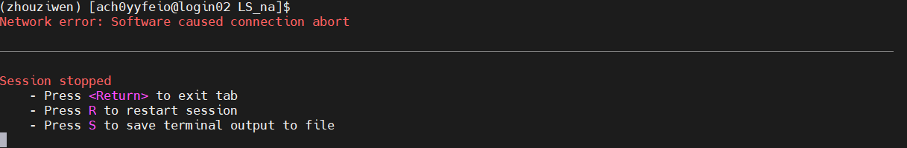
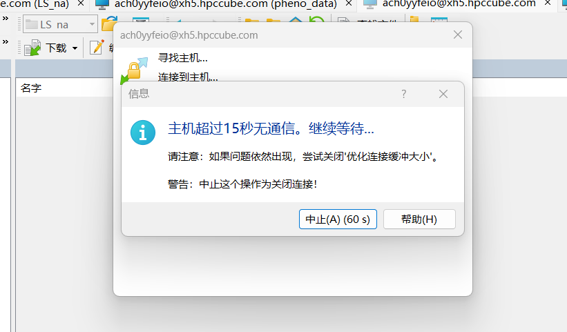
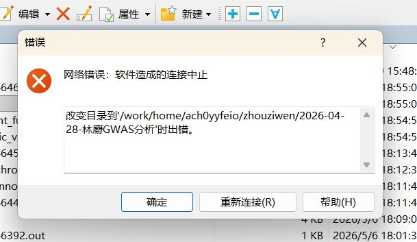
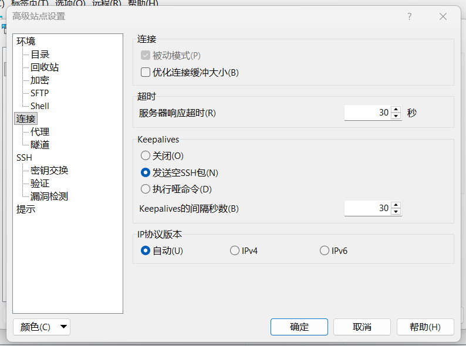

<!DOCTYPE html>


<html lang="zh-CN">


<head>
  <meta name="baidu-site-verification" content="codeva-NSg7ynviLa" />
  <meta charset="utf-8" />
    
  <meta name="viewport" content="width=device-width, initial-scale=1, maximum-scale=1" />
  <title>
    scnet超算互联网平台使用笔记 |  
  </title>
  <meta name="generator" content="hexo-theme-ayer">
  
  <link rel="shortcut icon" href="/images/mojie.jpg" />
  
  
<link rel="stylesheet" href="/dist/main.css">

  <link rel="stylesheet" href="https://cdn.jsdelivr.net/gh/Shen-Yu/cdn/css/remixicon.min.css">
  
<link rel="stylesheet" href="/css/custom.css">

  
  <script src="https://cdn.jsdelivr.net/npm/pace-js@1.0.2/pace.min.js"></script>
  
  

  

<link rel="alternate" href="/atom.xml" title="null" type="application/atom+xml">
</head>

</html>

<body>
  <div id="app">
    
      
    <main class="content on">
      <section class="outer">
  <article
  id="post-scnet超算互联网平台使用笔记"
  class="article article-type-post"
  itemscope
  itemprop="blogPost"
  data-scroll-reveal
>
  <div class="article-inner">
    
    <header class="article-header">
       
<h1 class="article-title sea-center" style="border-left:0" itemprop="name">
  scnet超算互联网平台使用笔记
</h1>
 

    </header>
     
    <div class="article-meta">
      <a href="/posts/35c635e1/" class="article-date">
  <time datetime="2026-05-12T10:50:20.000Z" itemprop="datePublished">2026-05-12</time>
</a> 
  <div class="article-category">
    <a class="article-category-link" href="/categories/%E6%95%B0%E6%8D%AE%E5%88%86%E6%9E%90/">数据分析</a>
  </div>
  
<div class="word_count">
    <span class="post-time">
        <span class="post-meta-item-icon">
            <i class="ri-quill-pen-line"></i>
            <span class="post-meta-item-text"> 字数统计:</span>
            <span class="post-count">13.9k</span>
        </span>
    </span>

    <span class="post-time">
        &nbsp; | &nbsp;
        <span class="post-meta-item-icon">
            <i class="ri-book-open-line"></i>
            <span class="post-meta-item-text"> 阅读时长≈</span>
            <span class="post-count">54 分钟</span>
        </span>
    </span>
</div>
 
    </div>
      
    <div class="tocbot"></div>


  
    <div class="article-entry" itemprop="articleBody">
       
  <link rel="stylesheet" type="text/css" href="https://cdn.jsdelivr.net/hint.css/2.4.1/hint.min.css"><p>scnet 平台和 slurm 调度系统的使用笔记。</p>
<span id="more"></span>
<h1>简单使用</h1>
<p>登录后，点击首页的<strong>控制行</strong>，然后在这个页面中的顶部有两个重点使用的，如下</p>
<ul>
<li><strong>文件管理</strong>：查看、上传、下载文件</li>
<li><strong>命令行</strong> : 打开一个命令行脚本，这是登录节点，可以运行一些简单的 linux 命令</li>
</ul>
<p>现在我一进入服务器，第一步就是设置环境，如下</p>
<figure class="highlight shell"><table><tr><td class="gutter"><pre><span class="line">1</span><br><span class="line">2</span><br><span class="line">3</span><br></pre></td><td class="code"><pre><span class="line">module purge</span><br><span class="line">conda activate zhouziwen</span><br><span class="line">bin=~/zhouziwen/bin</span><br></pre></td></tr></table></figure>
<h1>批量提交作业</h1>
<p>分析需要使用 <strong>SLURM</strong> 调度系统，作业（<strong>job</strong>）就是是你在超算上<strong>从“申请资源”到“跑完程序”的整个任务过程</strong>。</p>
<p>SLURM 是<strong>全球超算界的“普通话”</strong>，就像 Linux 系统里的 <code>ls</code>、<code>cd</code>命令一样，它是一个<strong>通用的、开源的作业调度系统</strong>。你学到的 SLURM 知识（<code>sbatch</code>, <code>squeue</code>等），换到国内外绝大多数超算中心（如清华、科大、天河二号、阿里云等）都能直接通用。</p>
<p>scnet 官网命令行专区：<a target="_blank" rel="noopener" href="https://www.scnet.cn/help/docs/mainsite/hpc/cmd/">https://www.scnet.cn/help/docs/mainsite/hpc/cmd/</a></p>
<ul>
<li>
<p>scnet官网入门说明链接：<a target="_blank" rel="noopener" href="https://www.scnet.cn/help/docs/mainsite/hpc/cmd/cmd-submit-job/">https://www.scnet.cn/help/docs/mainsite/hpc/cmd/cmd-submit-job/</a></p>
</li>
<li>
<p>scnet官网进阶技巧链接：<a target="_blank" rel="noopener" href="https://www.scnet.cn/help/docs/mainsite/hpc/cmd/skills/%EF%BC%8C%E8%BF%99%E9%87%8C%E9%9D%A2%E4%BB%8B%E7%BB%8D%E4%BA%86%E4%BA%A4%E4%BA%92%E5%BC%8F%E5%91%BD%E4%BB%A4%EF%BC%8C%E9%9B%86%E7%BE%A4%E8%87%AA%E5%B8%A6%E7%9A%84%E8%BD%AF%E4%BB%B6%EF%BC%88%E5%9C%A8">https://www.scnet.cn/help/docs/mainsite/hpc/cmd/skills/，这里面介绍了交互式命令，集群自带的软件（在</a> <code>module</code> 中）等（对我目前没有作用）</p>
</li>
</ul>
<p>slurm官网：<a target="_blank" rel="noopener" href="https://slurm.schedmd.com/">https://slurm.schedmd.com/</a></p>
<h2 id="什么是作业？">什么是作业？</h2>
<p><strong>作业 = Slurm 调度和管理的最小单位</strong></p>
<p>换个说法</p>
<ul>
<li>你提交一次 <code>sbatch</code></li>
<li>👉 Slurm 创建一个作业</li>
<li>👉 给它分配 CPU / 内存 / 时间</li>
<li>👉 负责启动、监控、结束</li>
</ul>
<hr>
<p>二、没有数组时：1 次 sbatch = 1 个作业</p>
<figure class="highlight bash"><table><tr><td class="gutter"><pre><span class="line">1</span><br></pre></td><td class="code"><pre><span class="line">sbatch job.sh</span><br></pre></td></tr></table></figure>
<figure class="highlight text"><table><tr><td class="gutter"><pre><span class="line">1</span><br><span class="line">2</span><br></pre></td><td class="code"><pre><span class="line">Job 12345</span><br><span class="line">└── 运行 job.sh</span><br></pre></td></tr></table></figure>
<hr>
<p>三、有数组时：1 次 sbatch = 多个作业</p>
<figure class="highlight bash"><table><tr><td class="gutter"><pre><span class="line">1</span><br></pre></td><td class="code"><pre><span class="line"><span class="comment">#SBATCH --array=1-3</span></span><br></pre></td></tr></table></figure>
<figure class="highlight text"><table><tr><td class="gutter"><pre><span class="line">1</span><br><span class="line">2</span><br><span class="line">3</span><br><span class="line">4</span><br></pre></td><td class="code"><pre><span class="line">Job 12345</span><br><span class="line">├── Job 12345_1</span><br><span class="line">├── Job 12345_2</span><br><span class="line">└── Job 12345_3</span><br></pre></td></tr></table></figure>
<hr>
<p>四、为什么叫「作业」而不叫「命令」？</p>
<p>作业（Job）</p>
<ul>
<li>✅ Slurm 管理的</li>
<li>✅ 有资源限制</li>
<li>✅ 有开始 / 结束</li>
<li>✅ 可以单独重跑</li>
</ul>
<p>命令（Command）</p>
<ul>
<li>❌ 只是脚本里的一行</li>
<li>❌ Slurm 看不见</li>
</ul>
<h2 id="创建作业脚本">创建作业脚本</h2>
<p>使用 <strong>SLURM</strong> 调度系统 ，你需要创建一个作业脚本，标准的叫法是 <strong>Batch Job Script（批处理作业脚本）</strong>，通常直接简称为 <strong>Job Script</strong>。</p>
<p>这个脚本在超算中扮演着**“中介”**的角色，它负责把你（用户）的需求翻译成 SLURM（调度器）能听懂的语言。它的作用可以拆解为两部分：</p>
<ol>
<li>
<p>上半部分 (<code>#SBATCH ...</code>)：<strong>“资源订单” (Order)</strong> ，这部分以 <code>#SBATCH</code>开头，<strong>不是给 Linux 执行的命令，而是给 SLURM 调度器看的“采购单”</strong>。</p>
<p><strong>作用</strong>：SLURM 读取这些指令后，会去资源池里帮你<strong>锁定</strong>对应的计算节点、CPU 和内存。如果资源不够，你的作业就会在队列（Queue）里等待。</p>
</li>
<li>
<p>下半部分 (Shell 命令)：<strong>“操作说明书” (Recipe)</strong> ，这部分是标准的 Linux Bash 命令，<strong>是作业在计算节点上被批准运行后，真正执行的步骤</strong>。</p>
<p><strong>作用</strong>：告诉计算节点，资源到位后，具体要加载什么软件、激活什么环境、运行什么程序。</p>
</li>
</ol>
<p>运行程序，需要使用提交任务的脚本，相应的脚本示例如下，命名为<strong>c.slurm</strong>。</p>
<figure class="highlight plaintext"><table><tr><td class="gutter"><pre><span class="line">1</span><br><span class="line">2</span><br><span class="line">3</span><br><span class="line">4</span><br><span class="line">5</span><br><span class="line">6</span><br><span class="line">7</span><br><span class="line">8</span><br><span class="line">9</span><br><span class="line">10</span><br><span class="line">11</span><br><span class="line">12</span><br><span class="line">13</span><br><span class="line">14</span><br><span class="line">15</span><br><span class="line">16</span><br><span class="line">17</span><br><span class="line">18</span><br></pre></td><td class="code"><pre><span class="line">#!/bin/bash</span><br><span class="line">#SBATCH -J zhouziwen                     # 作业的名称 可根据需要自行命名</span><br><span class="line">#SBATCH -p xhacnormalb                      # 在指定分区中分配资源，根据所拥有的资源修改</span><br><span class="line">#SBATCH --ntasks=1                         # 整个作业只分配 1 个 task（任务/进程）</span><br><span class="line">#SBATCH --cpus-per-task=1                  # CPU核心数目，变量 $SLURM_CPUS_PER_TASK</span><br><span class="line"></span><br><span class="line">export OMP_NUM_THREADS=$SLURM_CPUS_PER_TASK # OpenMP 的线程数目</span><br><span class="line"></span><br><span class="line">module purge</span><br><span class="line">set -euo pipefail</span><br><span class="line"></span><br><span class="line">echo &quot;[INFO] Job started at $(date)&quot;</span><br><span class="line">echo &quot;[INFO] Using $SLURM_CPUS_PER_TASK CPUs&quot;</span><br><span class="line"></span><br><span class="line"># 分析内容</span><br><span class="line"></span><br><span class="line">echo &quot;[INFO] Job finished at $(date)&quot;</span><br><span class="line"></span><br></pre></td></tr></table></figure>
<p>对于脚本内容，下面会有进一步的解释。</p>
<h2 id="提交脚本">提交脚本</h2>
<p>提交作业。</p>
<figure class="highlight plaintext"><table><tr><td class="gutter"><pre><span class="line">1</span><br></pre></td><td class="code"><pre><span class="line">sbatch run.sh</span><br></pre></td></tr></table></figure>
<p>查看作业运行状态，<strong>R</strong>就表示作业在运行当中。</p>
<figure class="highlight plaintext"><table><tr><td class="gutter"><pre><span class="line">1</span><br></pre></td><td class="code"><pre><span class="line">squeue</span><br></pre></td></tr></table></figure>
<p>运行结束之后会在当前目录生成<strong>slurm-xxx.out</strong>，其中作业xxx为作业号。这是标准输出文件。</p>
<p>取消作业：先通过<strong>squeue</strong>查看<strong>JOBID</strong>，假如<strong>JOBID为27532270</strong>，使用命令<strong>scancel JOBID</strong>取消作业。</p>
<figure class="highlight plaintext"><table><tr><td class="gutter"><pre><span class="line">1</span><br></pre></td><td class="code"><pre><span class="line">scancel 27532270</span><br></pre></td></tr></table></figure>
<p>目前常用的查询命令</p>
<figure class="highlight shell"><table><tr><td class="gutter"><pre><span class="line">1</span><br><span class="line">2</span><br><span class="line">3</span><br><span class="line">4</span><br></pre></td><td class="code"><pre><span class="line">job=21695205</span><br><span class="line"></span><br><span class="line">seff $job</span><br><span class="line">tail slurm-$&#123;job&#125;.out</span><br></pre></td></tr></table></figure>
<h2 id="作业脚本内容解释">作业脚本内容解释</h2>
<h3 id="常用-SBATCH-参数">常用<code>#SBATCH</code> 参数</h3>
<p>完整的参数说明见官网：<a target="_blank" rel="noopener" href="https://slurm.schedmd.com/sbatch.html">https://slurm.schedmd.com/sbatch.html</a></p>
<p>🚀 一、 作业基础信息（名字、队列、时间）</p>
<p>这些是每个脚本的“门面”，用来告诉调度器你是谁，要在哪跑，要跑多久。</p>
<table>
<thead>
<tr>
<th style="text-align:left">参数 (全写)</th>
<th style="text-align:center">缩写</th>
<th style="text-align:left">说明</th>
<th style="text-align:left">示例</th>
</tr>
</thead>
<tbody>
<tr>
<td style="text-align:left"><code>--job-name</code></td>
<td style="text-align:center"><code>-J</code></td>
<td style="text-align:left"><strong>作业名称</strong>。起个好记的名字，方便在队列里一眼找到你的任务。</td>
<td style="text-align:left"><code>#SBATCH -J my_gwas_analysis</code></td>
</tr>
<tr>
<td style="text-align:left"><code>--partition</code></td>
<td style="text-align:center"><code>-p</code></td>
<td style="text-align:left"><strong>指定分区（队列）</strong>。不同分区可能对应不同的硬件（如 CPU/GPU）或权限。</td>
<td style="text-align:left"><code>#SBATCH -p cpu_partition</code></td>
</tr>
<tr>
<td style="text-align:left"><code>--time</code></td>
<td style="text-align:center"><code>-t</code></td>
<td style="text-align:left"><strong>最大运行时间</strong>。超时会被系统强行杀死！格式可以是 <code>分钟</code> 或 <code>小时:分钟:秒</code>。</td>
<td style="text-align:left"><code>#SBATCH -t 24:00:00</code> (24小时)</td>
</tr>
<tr>
<td style="text-align:left"><code>--account</code></td>
<td style="text-align:center"><code>-A</code></td>
<td style="text-align:left"><strong>计费账号</strong>。多用户或多项目集群必填，告诉系统把算力费算在谁的头上。</td>
<td style="text-align:left"><code>#SBATCH -A proj_2024_abc</code></td>
</tr>
</tbody>
</table>
<hr>
<p>💻 二、 核心资源申请（CPU、内存、节点）</p>
<p>这是最容易算错的地方，直接关系到你的任务能不能跑起来，或者会不会浪费资源。</p>
<table>
<thead>
<tr>
<th style="text-align:left">参数 (全写)</th>
<th style="text-align:center">缩写</th>
<th style="text-align:left">说明</th>
<th style="text-align:left">示例</th>
</tr>
</thead>
<tbody>
<tr>
<td style="text-align:left"><code>--nodes</code></td>
<td style="text-align:center"><code>-N</code></td>
<td style="text-align:left"><strong>申请的节点数量</strong>。单机多核程序设为 1 即可。</td>
<td style="text-align:left"><code>#SBATCH -N 1</code></td>
</tr>
<tr>
<td style="text-align:left"><code>--ntasks</code></td>
<td style="text-align:center"><code>-n</code></td>
<td style="text-align:left"><strong>总任务数 (MPI进程数)</strong>。通常单节点单进程设为 1。</td>
<td style="text-align:left"><code>#SBATCH -n 1</code></td>
</tr>
<tr>
<td style="text-align:left"><code>--ntasks-per-node</code></td>
<td style="text-align:center"><em>(无)</em></td>
<td style="text-align:left"><strong>每个节点的任务数</strong>。配合 <code>-N</code> 使用，控制节点内的任务分布。</td>
<td style="text-align:left"><code>#SBATCH --ntasks-per-node=4</code></td>
</tr>
<tr>
<td style="text-align:left"><code>--cpus-per-task</code></td>
<td style="text-align:center"><code>-c</code></td>
<td style="text-align:left"><strong>每个任务分配的 CPU 核心数</strong>。针对多线程程序（如 Python/OpenMP）。</td>
<td style="text-align:left"><code>#SBATCH -c 8</code></td>
</tr>
<tr>
<td style="text-align:left"><code>--mem</code></td>
<td style="text-align:center"><em>(无)</em></td>
<td style="text-align:left"><strong>单节点总内存限制</strong>。单位可用 K/M/G/T。<strong>优先级高于</strong> <code>--mem-per-cpu</code>。</td>
<td style="text-align:left"><code>#SBATCH --mem=64G</code></td>
</tr>
<tr>
<td style="text-align:left"><code>--mem-per-cpu</code></td>
<td style="text-align:center"><em>(无)</em></td>
<td style="text-align:left"><strong>每 CPU 核心的内存</strong>。总内存 = 核心数 × 该值。</td>
<td style="text-align:left"><code>#SBATCH --mem-per-cpu=4G</code></td>
</tr>
</tbody>
</table>
<blockquote>
<p>💡 <strong>避坑指南：CPU 和内存的分配逻辑</strong><br>
实际总 CPU 核心数 = <code>节点数(-N)</code> × <code>每节点任务数(--ntasks-per-node)</code> × <code>每任务核心数(-c)</code><br>
申请内存时，<strong><code>--mem</code> 是直接划定节点总内存，而 <code>--mem-per-cpu</code> 是弹性计算。</strong> 一般建议直接用 <code>--mem</code> 更直观不易错。</p>
</blockquote>
<hr>
<p>📂 三、 输入输出与日志管理</p>
<p>跑大规模作业时，好的日志习惯能救你一命。</p>
<table>
<thead>
<tr>
<th style="text-align:left">参数 (全写)</th>
<th style="text-align:center">缩写</th>
<th style="text-align:left">说明</th>
<th style="text-align:left">示例</th>
</tr>
</thead>
<tbody>
<tr>
<td style="text-align:left"><code>--output</code></td>
<td style="text-align:center"><code>-o</code></td>
<td style="text-align:left"><strong>标准输出日志文件</strong>。支持变量替换，<code>%j</code> 会自动变成 Job ID。</td>
<td style="text-align:left"><code>#SBATCH -o logs/job_%j.out</code></td>
</tr>
<tr>
<td style="text-align:left"><code>--error</code></td>
<td style="text-align:center"><code>-e</code></td>
<td style="text-align:left"><strong>标准错误日志文件</strong>。如果不设，默认会和 output 合并。</td>
<td style="text-align:left"><code>#SBATCH -e logs/job_%j.err</code></td>
</tr>
<tr>
<td style="text-align:left"><code>--chdir</code></td>
<td style="text-align:center"><code>-D</code></td>
<td style="text-align:left"><strong>工作目录</strong>。脚本在哪个路径下执行。默认是当前提交目录。</td>
<td style="text-align:left"><code>#SBATCH -D /home/user/project/</code></td>
</tr>
</tbody>
</table>
<hr>
<p>🎫 四、 特殊硬件与高级控制</p>
<p>当你需要 GPU，或者想要更精细地控制作业流转时使用。</p>
<table>
<thead>
<tr>
<th style="text-align:left">参数 (全写)</th>
<th style="text-align:center">缩写</th>
<th style="text-align:left">说明</th>
<th style="text-align:left">示例</th>
</tr>
</thead>
<tbody>
<tr>
<td style="text-align:left"><code>--gres</code></td>
<td style="text-align:center"><em>(无)</em></td>
<td style="text-align:left"><strong>申请通用资源</strong>（如 GPU、高速本地盘）。格式：<code>资源类型:数量</code>。</td>
<td style="text-align:left"><code>#SBATCH --gres=gpu:1</code> (申请1块GPU)</td>
</tr>
<tr>
<td style="text-align:left"><code>--exclude</code></td>
<td style="text-align:center"><code>-x</code></td>
<td style="text-align:left"><strong>黑名单节点</strong>。遇到过某台机器坏了或性能差，可以直接避开。</td>
<td style="text-align:left"><code>#SBATCH -x node05,node06</code></td>
</tr>
<tr>
<td style="text-align:left"><code>--nodelist</code></td>
<td style="text-align:center"><code>-w</code></td>
<td style="text-align:left"><strong>白名单节点</strong>。强制指定在某几台机器上跑（通常和 <code>--exclusive</code> 连用）。</td>
<td style="text-align:left"><code>#SBATCH -w node01</code></td>
</tr>
<tr>
<td style="text-align:left"><code>--exclusive</code></td>
<td style="text-align:center"><em>(无)</em></td>
<td style="text-align:left"><strong>独占节点</strong>。哪怕你只用 1 个核，整个节点的 128 核都归你，别人不能用。</td>
<td style="text-align:left"><code>#SBATCH --exclusive</code></td>
</tr>
</tbody>
</table>
<h4 id="作业环境变量">作业环境变量</h4>
<table>
<thead>
<tr>
<th style="text-align:left">名称</th>
<th style="text-align:left">含义</th>
<th style="text-align:left">类型</th>
<th style="text-align:left">示例</th>
</tr>
</thead>
<tbody>
<tr>
<td style="text-align:left"><code>SLURM_JOB_ID</code></td>
<td style="text-align:left">作业id，即作业调度系统为作业分配的作业号，可用于bjobs等命令</td>
<td style="text-align:left">数值</td>
<td style="text-align:left">hostfile=<code>&quot; ma.$SLURM_JOB_ID&quot;</code> 使用$SLURM_JOB_ID定义machinefile，指定mpi节点文件</td>
</tr>
<tr>
<td style="text-align:left"><code>SLURM_JOB_NAME</code></td>
<td style="text-align:left">作业名称，即-J 选项指定的名称</td>
<td style="text-align:left">字符串</td>
<td style="text-align:left">mkdir ${SLURM_JOB_NAME} 根据作业名称创建临时工作目录</td>
</tr>
<tr>
<td style="text-align:left"><code>SLURM_JOB_NUM_NODES</code></td>
<td style="text-align:left">作业分配到的节点总数</td>
<td style="text-align:left">数值</td>
<td style="text-align:left">echo $SLURM_JOB_NUM_NODES</td>
</tr>
<tr>
<td style="text-align:left"><code>SLURM_JOB_NODELIST</code></td>
<td style="text-align:left">作业被分配到的节点列表</td>
<td style="text-align:left">字符串</td>
<td style="text-align:left">echo $SLURM_JOB_NODELIST</td>
</tr>
<tr>
<td style="text-align:left"><code>SLURM_JOB_PARTITION</code></td>
<td style="text-align:left">作业被分配到的队列名</td>
<td style="text-align:left">字符串</td>
<td style="text-align:left">echo $SLURM_JOB_PARTITION</td>
</tr>
</tbody>
</table>
<h4 id="实战组合公式（直接抄作业）">实战组合公式（直接抄作业）</h4>
<p>根据不同的业务场景，你可以直接套用以下模板：</p>
<ol>
<li>常规单节点多线程任务 (如 Python/R/Shapeit4)</li>
</ol>
<figure class="highlight bash"><table><tr><td class="gutter"><pre><span class="line">1</span><br><span class="line">2</span><br><span class="line">3</span><br><span class="line">4</span><br><span class="line">5</span><br><span class="line">6</span><br><span class="line">7</span><br><span class="line">8</span><br><span class="line">9</span><br></pre></td><td class="code"><pre><span class="line"><span class="comment">#SBATCH -J my_thread_job</span></span><br><span class="line"><span class="comment">#SBATCH -p normal</span></span><br><span class="line"><span class="comment">#SBATCH -N 1</span></span><br><span class="line"><span class="comment">#SBATCH -n 1</span></span><br><span class="line"><span class="comment">#SBATCH -c 16              # 申请16个CPU核心</span></span><br><span class="line"><span class="comment">#SBATCH --mem=32G         # 申请32G内存</span></span><br><span class="line"><span class="comment">#SBATCH -t 12:00:00</span></span><br><span class="line"><span class="comment">#SBATCH -o %j.out</span></span><br><span class="line"><span class="comment">#SBATCH -e %j.err</span></span><br></pre></td></tr></table></figure>
<ol start="2">
<li>纯 MPI 多节点并行任务</li>
</ol>
<figure class="highlight bash"><table><tr><td class="gutter"><pre><span class="line">1</span><br><span class="line">2</span><br><span class="line">3</span><br><span class="line">4</span><br><span class="line">5</span><br><span class="line">6</span><br><span class="line">7</span><br></pre></td><td class="code"><pre><span class="line"><span class="comment">#SBATCH -J my_mpi_job</span></span><br><span class="line"><span class="comment">#SBATCH -p mpi_partition</span></span><br><span class="line"><span class="comment">#SBATCH -N 2              # 跨2个节点</span></span><br><span class="line"><span class="comment">#SBATCH -n 32             # 总共32个MPI进程</span></span><br><span class="line"><span class="comment">#SBATCH --ntasks-per-node=16 # 每个节点跑16个进程</span></span><br><span class="line"><span class="comment">#SBATCH --mem-per-cpu=2G</span></span><br><span class="line"><span class="comment">#SBATCH -t 48:00:00</span></span><br></pre></td></tr></table></figure>
<ol start="3">
<li>GPU 作业 (如深度学习训练)</li>
</ol>
<figure class="highlight bash"><table><tr><td class="gutter"><pre><span class="line">1</span><br><span class="line">2</span><br><span class="line">3</span><br><span class="line">4</span><br><span class="line">5</span><br><span class="line">6</span><br><span class="line">7</span><br></pre></td><td class="code"><pre><span class="line"><span class="comment">#SBATCH -J my_gpu_job</span></span><br><span class="line"><span class="comment">#SBATCH -p gpu</span></span><br><span class="line"><span class="comment">#SBATCH -N 1</span></span><br><span class="line"><span class="comment">#SBATCH -n 1</span></span><br><span class="line"><span class="comment">#SBATCH --gres=gpu:2      # 关键：申请2块GPU</span></span><br><span class="line"><span class="comment">#SBATCH --mem=128G</span></span><br><span class="line"><span class="comment">#SBATCH -t 72:00:00</span></span><br></pre></td></tr></table></figure>
<h3 id="指定作业名称">指定作业名称</h3>
<p>给这个作业起一个名称，完整写法如下：</p>
<figure class="highlight plaintext"><table><tr><td class="gutter"><pre><span class="line">1</span><br></pre></td><td class="code"><pre><span class="line">#SBATCH --job-name=hello_world</span><br></pre></td></tr></table></figure>
<p>用处是方便管理，<code>squeue </code> 命令输出的NAME 列显示的就是 <code>-J</code>指定的名字</p>
<h3 id="申请节点数目">申请节点数目</h3>
<p>申请节点数目通常是1（<code>#SBATCH -N 1</code>）。</p>
<p>在 SLURM 里，<strong>Node（节点）= 一台独立的物理服务器</strong>（一台机器，有 CPU、内存、硬盘）。</p>
<p>举例如下：</p>
<table>
<thead>
<tr>
<th style="text-align:left"><strong>现实世界</strong></th>
<th style="text-align:left"><strong>SLURM 世界</strong></th>
</tr>
</thead>
<tbody>
<tr>
<td style="text-align:left">工厂</td>
<td style="text-align:left">超算集群</td>
</tr>
<tr>
<td style="text-align:left">车间</td>
<td style="text-align:left">Partition（分区）</td>
</tr>
<tr>
<td style="text-align:left">一台机器</td>
<td style="text-align:left">Node（节点）</td>
</tr>
<tr>
<td style="text-align:left">机器里的工人</td>
<td style="text-align:left">CPU Core（CPU 核心）</td>
</tr>
</tbody>
</table>
<p>这里作业名称好理解，，使用的核心数目根据具体情况修改（<code>#SBATCH --ntasks-per-node=4</code>）。</p>
<h4 id="什么时候节点大于1">什么时候节点大于1</h4>
<p>只有 MPI 并行程序才需要多节点</p>
<p>例如：</p>
<ul>
<li>OpenMPI / Intel MPI</li>
<li>自写 C/C++ MPI 程序</li>
<li>某些旧版物理 / 化学模拟软件</li>
</ul>
<p>什么时候用 MPI 呢？</p>
<p><strong>场景：任务太大，单机内存装不下，或者算 100 年都算不完。</strong></p>
<ul>
<li><strong>例子</strong>：模拟宇宙演化、预测全球气候、训练超大语言模型。</li>
<li><strong>效果</strong>：用 100 台机器跑 MPI，可能把 100 年的任务缩短到 1 年。<strong>这是 MPI 的绝对主场。</strong></li>
</ul>
<h3 id="每个节点的任务数（非必须）">每个节点的任务数（非必须）</h3>
<p><code>#SBATCH --ntasks-per-node=1</code></p>
<p>这里的“任务”（<strong>tasks</strong>）指的是<strong>独立的程序进程</strong>，不是 CPU 核心。一般就是说你准备<strong>同时跑几个程序</strong>，最常见的用途是**“并行跑多个互不干扰的独立任务”**（通常称为“任务阵列”或“多实例运行”）。举个例子，假如你要同时跑4条命令（没看懂，好像是多进程需要用 srun 启动，这是 slurm 的一个命令，就是在作业中启动 task ）。</p>
<figure class="highlight shell"><table><tr><td class="gutter"><pre><span class="line">1</span><br><span class="line">2</span><br><span class="line">3</span><br><span class="line">4</span><br><span class="line">5</span><br><span class="line">6</span><br><span class="line">7</span><br><span class="line">8</span><br><span class="line">9</span><br><span class="line">10</span><br><span class="line">11</span><br><span class="line">12</span><br><span class="line">13</span><br><span class="line">14</span><br><span class="line">15</span><br></pre></td><td class="code"><pre><span class="line"><span class="meta prompt_">#</span><span class="language-bash">SBATCH -p xhacnormalb01</span></span><br><span class="line"><span class="meta prompt_">#</span><span class="language-bash">SBATCH -N 1</span></span><br><span class="line"><span class="meta prompt_">#</span><span class="language-bash">SBATCH --ntasks-per-node=4</span></span><br><span class="line"><span class="meta prompt_">#</span><span class="language-bash">SBATCH -c 2</span></span><br><span class="line"><span class="meta prompt_">#</span><span class="language-bash">SBATCH -J multi_input</span></span><br><span class="line"></span><br><span class="line">module load anaconda3/2023.03</span><br><span class="line">conda activate shapeit4_env</span><br><span class="line"><span class="meta prompt_"></span></span><br><span class="line"><span class="meta prompt_"># </span><span class="language-bash">同一个脚本，4 个不同输入文件</span></span><br><span class="line">srun -n 1 -c 2 python my_script.py input1.txt &amp;</span><br><span class="line">srun -n 1 -c 2 python my_script.py input2.txt &amp;</span><br><span class="line">srun -n 1 -c 2 python my_script.py input3.txt &amp;</span><br><span class="line">srun -n 1 -c 2 python my_script.py input4.txt &amp;</span><br><span class="line">wait</span><br></pre></td></tr></table></figure>
<p>如果你只有一个独立任务，可以不设置这个参数，默认就是1个任务。</p>
<h4 id="进一步解释">进一步解释</h4>
<p><strong>假设你有 2 行运行 2 个 python 脚本，task=1 和 task=2 有什么区别？</strong></p>
<p>在 Slurm 里，<strong>task ≠ 脚本行数</strong>，而是一个<strong>并行执行单元</strong>。正常 task 设为1，表示<strong>这个作业只能同时运行 1 个进程</strong>。</p>
<p>✅ 情况 1：<code>--ntasks=1</code></p>
<figure class="highlight plaintext"><table><tr><td class="gutter"><pre><span class="line">1</span><br><span class="line">2</span><br><span class="line">3</span><br></pre></td><td class="code"><pre><span class="line">#SBATCH --ntasks=1</span><br><span class="line">python a.py</span><br><span class="line">python b.py</span><br></pre></td></tr></table></figure>
<p>实际执行方式：</p>
<figure class="highlight plaintext"><table><tr><td class="gutter"><pre><span class="line">1</span><br><span class="line">2</span><br></pre></td><td class="code"><pre><span class="line">python a.py   ← 先跑</span><br><span class="line">python b.py   ← a.py 跑完再跑</span><br></pre></td></tr></table></figure>
<p>✔️ <strong>串行执行</strong></p>
<p>✔️ 同一时间只用 1 个 CPU</p>
<p>✔️ 不会违反 Slurm 的资源限制</p>
<p><strong>这是 scnet 上最常见、最安全的写法</strong></p>
<p>❌ 情况 2：<code>--ntasks=2</code>（但你没告诉 Slurm）</p>
<figure class="highlight plaintext"><table><tr><td class="gutter"><pre><span class="line">1</span><br><span class="line">2</span><br><span class="line">3</span><br></pre></td><td class="code"><pre><span class="line">#SBATCH --ntasks=2</span><br><span class="line">python a.py</span><br><span class="line">python b.py</span><br></pre></td></tr></table></figure>
<p>⚠️ <strong>这是“隐形违规”</strong></p>
<p>原因：</p>
<ul>
<li>Slurm 以为你有 <strong>2 个 task</strong></li>
<li>但你并没有用 <code>srun</code>/ MPI / 并行机制</li>
<li>实际还是 <strong>串行 shell 命令</strong></li>
</ul>
<p>👉 结果：</p>
<ul>
<li>可能被调度器警告</li>
<li>或浪费资源</li>
<li>或被管理员盯上</li>
</ul>
<p><strong>什么时候才“真正需要”多个 task？</strong></p>
<p>✅ 正确用法 1：MPI 程序</p>
<figure class="highlight plaintext"><table><tr><td class="gutter"><pre><span class="line">1</span><br><span class="line">2</span><br></pre></td><td class="code"><pre><span class="line">#SBATCH --ntasks=16</span><br><span class="line">srun mpirun my_mpi_program</span><br></pre></td></tr></table></figure>
<hr>
<p>✅ 正确用法 2：srun 并行计算</p>
<figure class="highlight plaintext"><table><tr><td class="gutter"><pre><span class="line">1</span><br><span class="line">2</span><br><span class="line">3</span><br><span class="line">4</span><br></pre></td><td class="code"><pre><span class="line">#SBATCH --ntasks=2</span><br><span class="line">srun -n 1 python a.py &amp;</span><br><span class="line">srun -n 1 python b.py &amp;</span><br><span class="line">wait</span><br></pre></td></tr></table></figure>
<p>✅ 正确用法 3：某些古老 Fortran / C 程序（非线程安全）（貌似是说有些80–90 年代写的脚本没有多线程概念，必须使用独立进程）</p>
<h3 id="指定每个任务的CPU核心数目（非必须）">指定每个任务的CPU核心数目（非必须）</h3>
<p><code>#SBATCH --cpus-per-task=8 </code></p>
<p>这条指令的意思是：<strong>告诉 SLURM，每一个“任务（Task）”需要独占 8 个 CPU 核心（Cores）。</strong></p>
<p>如果你有4个任务，那么你就需要 4✖8=32个CPU核心，否则你的作业会排队（Pending），直到有机器能满足这个需求。</p>
<p>当你的程序支持“多线程” 的时候，你就必须要使用这个参数。这是告诉 SLURM：“请给我 8 个核心，我会在这个程序里自己开 8 个线程。”</p>
<p>比如：</p>
<ul>
<li><strong>Python 的 multiprocessing.Pool(8)</strong></li>
<li><strong>Java 程序 (-Xmx+ 多线程)</strong></li>
<li><strong>R 的 parallel包</strong></li>
<li><strong>shapeit4 / impute5</strong> 等生信工具（通常自带多线程）</li>
</ul>
<h4 id="scnet-上的逻辑">scnet 上的逻辑</h4>
<p>收费标准：scnet 上的收费逻辑就是按照你申请的 CPU 数目（<code>#SBATCH --cpus-per-task=8</code>）乘以运行时间。</p>
<p>指定CPU数目的逻辑：使用#SBATCH --cpus-per-task=8申请了8个cpu核心（单节点单任务），平台上就给锁死了8个核心给这个作业使用。就是不管我实际用了几核，这8核始终是为我预留的，别人无法使用。</p>
<h3 id="指定分区">指定分区</h3>
<p>要解释的就是 <code>#SBATCH -p xahcnormal</code> ，这句话是告诉 SLURM ：请把我的作业提交到名为 <code>xahcnormal</code>的分区（也叫队列， <strong>Partition</strong>）中去运行。</p>
<p>完整命令是</p>
<figure class="highlight plaintext"><table><tr><td class="gutter"><pre><span class="line">1</span><br></pre></td><td class="code"><pre><span class="line">#SBATCH --partition=xahcnormal</span><br></pre></td></tr></table></figure>
<p><strong>分区</strong>是超算里的“不同排队通道”，在 SCNET（以及绝大多数使用 SLURM 的超算）中，计算资源通常被划分为多个 <strong>Partition</strong>，每个分区有不同的规则：</p>
<table>
<thead>
<tr>
<th>分区类型</th>
<th>特点</th>
<th>适用场景</th>
</tr>
</thead>
<tbody>
<tr>
<td><strong>normal / xahcnormal</strong></td>
<td>常规计算资源，稳定</td>
<td>普通数据分析、脚本运行</td>
</tr>
<tr>
<td><strong>gpu</strong></td>
<td>带 GPU 卡</td>
<td>深度学习、GPU 加速</td>
</tr>
<tr>
<td><strong>debug / test</strong></td>
<td>短作业、快速测试</td>
<td>调试代码</td>
</tr>
<tr>
<td><strong>highmem</strong></td>
<td>大内存节点</td>
<td>大数据、基因组组装</td>
</tr>
</tbody>
</table>
<p>你这里的 <code>xahcnormal</code>很可能是 <strong>SCNET 上的一个“普通 CPU 计算队列”</strong>。</p>
<p>如何确认你该用哪个分区？在 SCNET 登录节点上执行下面命令，用来实时查看超算集群里“有哪些分区、哪些节点、能不能用”（只会显示<strong>你当前账号有权限使用的分区</strong>）</p>
<figure class="highlight plaintext"><table><tr><td class="gutter"><pre><span class="line">1</span><br></pre></td><td class="code"><pre><span class="line">sinfo</span><br></pre></td></tr></table></figure>
<p>你会看到类似这样的表格：</p>
<figure class="highlight bash"><table><tr><td class="gutter"><pre><span class="line">1</span><br><span class="line">2</span><br><span class="line">3</span><br><span class="line">4</span><br><span class="line">5</span><br></pre></td><td class="code"><pre><span class="line">PARTITION     AVAIL   TIMELIMIT   NODES   STATE    NODELIST</span><br><span class="line">xahcnormal      up     infinite      8     idle    cn[1-8]</span><br><span class="line">xahcnormal      up     infinite      2    alloc    cn9,cn10</span><br><span class="line">gpu             up     2-00:00:00    2     idle    gpu[1-2]</span><br><span class="line">debug*          up     01:00:00      1    drain    debug1</span><br></pre></td></tr></table></figure>
<p>我们来逐列拆解它的“黑话”：</p>
<table>
<thead>
<tr>
<th>列名 (PARTITION)</th>
<th>含义</th>
<th>你的决策参考</th>
</tr>
</thead>
<tbody>
<tr>
<td><strong>PARTITION</strong></td>
<td><strong>队列/分区名</strong>（如 <code>xahcnormal</code>）</td>
<td>你提交脚本时 <code>-p</code>参数填什么</td>
</tr>
<tr>
<td><strong>AVAIL</strong></td>
<td>队列状态</td>
<td><code>up</code>=可用；<code>down</code>=不可用</td>
</tr>
<tr>
<td><strong>TIMELIMIT</strong></td>
<td><strong>最大运行时间</strong></td>
<td><code>infinite</code>=无限制；<code>01:00:00</code>=限1小时</td>
</tr>
<tr>
<td><strong>NODES</strong></td>
<td>节点数量</td>
<td>该队列总共有多少台机器</td>
</tr>
<tr>
<td><strong>STATE</strong></td>
<td><strong>节点状态（最关键）</strong></td>
<td>决定了你的作业能否立即运行</td>
</tr>
<tr>
<td><strong>NODELIST</strong></td>
<td>具体节点名</td>
<td>哪几台机器处于这个状态</td>
</tr>
</tbody>
</table>
<hr>
<p>重点关注：STATE（状态）的含义</p>
<p>这是 <code>sinfo</code>里最需要看懂的列，它直接告诉你<strong>现在能不能算</strong>：</p>
<table>
<thead>
<tr>
<th>状态 (STATE)</th>
<th>含义</th>
<th>能不能提交作业？</th>
</tr>
</thead>
<tbody>
<tr>
<td><strong>idle</strong></td>
<td><strong>空闲</strong>（机器闲着，等活干）</td>
<td>✅ <strong>最佳时机</strong>，提交后秒跑</td>
</tr>
<tr>
<td><strong>alloc</strong></td>
<td><strong>已占用</strong>（正在运行作业）</td>
<td>⚠️ 可提交，但需<strong>排队等待</strong></td>
</tr>
<tr>
<td><strong>mix</strong></td>
<td><strong>部分占用</strong>（节点还有空位）</td>
<td>✅ 通常可提交（抢占剩余资源）</td>
</tr>
<tr>
<td><strong>drain</strong> / <strong>down</strong></td>
<td><strong>下线/故障</strong>（节点坏了）</td>
<td>❌ <strong>绝对别提交</strong>，会报错</td>
</tr>
<tr>
<td><strong>comp</strong></td>
<td><strong>正在释放资源</strong>（作业刚结束）</td>
<td>⚠️ 稍等片刻，即将变 idle</td>
</tr>
</tbody>
</table>
<p><strong>SCNET 实战判断</strong>：</p>
<ul>
<li>如果你看到 <code>xahcnormal</code>队列有 <strong>idle</strong> 节点，说明资源充足，你的作业会立刻开始。</li>
<li>如果全是 <strong>alloc</strong>，说明大家都在排队，你的作业会进入 <code>PENDING</code>状态。</li>
</ul>
<h3 id="指定内存">指定内存</h3>
<p>SLURM 的内存管理逻辑其实非常“直球”：<strong>你申请多少，它就给你锁死多少；你超用了，它就杀进程（OOM Kill）</strong>。不存在“按需动态分配”的机制。以下是通用的核心规则，适用于包括 SCNET 在内的大多数集群。</p>
<p>申请规则：不设参数 = 独占整节点</p>
<p>这是 SLURM 最容易被误解的默认行为，也是你在超算上必须显式设置内存的根本原因。</p>
<table>
<thead>
<tr>
<th>申请方式</th>
<th>计算公式（总内存）</th>
<th>调度器行为</th>
<th>建议场景</th>
</tr>
</thead>
<tbody>
<tr>
<td><strong>不设置 --mem</strong></td>
<td><code>节点物理内存总量</code></td>
<td><strong>独占整节点</strong>。即使你只跑一个小任务，调度器也会把整个节点的内存划给你，导致资源浪费且排队变慢。</td>
<td><strong>强烈不推荐</strong>（除非你是管理员在跑独占测试）。</td>
</tr>
<tr>
<td><code>--mem=10G</code></td>
<td><code>10 GB</code>（每节点）</td>
<td>申请固定的总内存池，由该节点上的所有任务共享。</td>
<td><strong>最常用</strong>。适合单任务或单节点多任务。</td>
</tr>
<tr>
<td><code>--mem-per-cpu=4G</code></td>
<td><code>4 GB × 核心数 (-n)</code></td>
<td>按核心数分配。申请 4 核就是 16G，申请 8 核就是 32G。</td>
<td>适合 MPI 或 Embarrassingly Parallel 任务。</td>
</tr>
<tr>
<td><code>--mem-per-gpu=8G</code></td>
<td><code>8 GB × GPU 数</code></td>
<td>按 GPU 卡数分配显存对应的主机内存。</td>
<td>适合 GPU 任务。</td>
</tr>
</tbody>
</table>
<p><strong>关键提醒</strong>：<code>--mem</code>、<code>--mem-per-cpu</code>、<code>--mem-per-gpu</code><strong>三者互斥</strong>，只能选一个写在脚本里。</p>
<p>极少数集群管理员可能会设置 <code>DefMemPerNode=2000</code>（约 2GB）或 <code>DefMemPerCPU=1024</code>（1GB/核），但这<strong>不是通用规则</strong>。你不能依赖这种“好心”配置。</p>
<p><strong>验证命令</strong>：想知道你所在集群的真实配置，可以运行：</p>
<figure class="highlight bash"><table><tr><td class="gutter"><pre><span class="line">1</span><br></pre></td><td class="code"><pre><span class="line">scontrol show config | grep -A5 -B5 DefMem</span><br></pre></td></tr></table></figure>
<p>我这里输出结果，设置了一个CPU最多 3832MB/1024 约等于 3.74 G （我看运行脚本时也不能超过这个设置，因此当你必须要用高内存时，你要基于内存数目来设置CPU数目，比如 50GB ，就是 50/3.8 = 13.37，因此需要设为 14 ）</p>
<figure class="highlight plaintext"><table><tr><td class="gutter"><pre><span class="line">1</span><br></pre></td><td class="code"><pre><span class="line">DefMemPerCPU            = 3832</span><br></pre></td></tr></table></figure>
<p>这个好像不准，scnet 平台是每个队列的限额不一样，使用下面的命令查看队列的配置信息，会出来一堆信息，查看 DefMemPerCPU 得到每个 CPU <strong>默认分配 3931 MB 内存</strong>，约等于 <strong>3.84 GB / 核</strong>（按3.8算就行）</p>
<figure class="highlight plaintext"><table><tr><td class="gutter"><pre><span class="line">1</span><br></pre></td><td class="code"><pre><span class="line">scontrol show partition xhacnormalb</span><br></pre></td></tr></table></figure>
<p>最后的信息如下</p>
<figure class="highlight shell"><table><tr><td class="gutter"><pre><span class="line">1</span><br><span class="line">2</span><br><span class="line">3</span><br><span class="line">4</span><br><span class="line">5</span><br><span class="line">6</span><br><span class="line">7</span><br></pre></td><td class="code"><pre><span class="line">PriorityJobFactor=1 PriorityTier=6000 RootOnly=NO ReqResv=NO OverSubscribe=NO</span><br><span class="line">OverTimeLimit=NONE PreemptMode=OFF</span><br><span class="line">State=UP TotalCPUs=37248 TotalNodes=291 SelectTypeParameters=NONE</span><br><span class="line">JobDefaults=(null)</span><br><span class="line">SuspendKeepIdle=n/a</span><br><span class="line">DefMemPerCPU=3931 MaxMemPerNode=UNLIMITED</span><br><span class="line">TRES=cpu=37248,mem=149428500M,node=291,billing=37248</span><br></pre></td></tr></table></figure>
<p>换了一个核存比大一倍的队列 xhacnormalb01，其限额是 7963 MB，也几乎是大了一倍。</p>
<p>问了客服，在 scnet 中，内存是不用指定的，就是根据你指定的 CPU 核心数目确定的，核心越多，内存越大。</p>
<h3 id="module">module</h3>
<p>module是超算用来“切换软件环境”的工具。如果使用自己的 conda 环境，则不用配置。</p>
<blockquote>
<p>module load= 把某个软件“拿出来用”。</p>
<p>module purge= 把桌子上所有软件“清空”，重新开始。</p>
</blockquote>
<p>在超算上：</p>
<ul>
<li>有很多<strong>不同版本</strong>的软件（GCC 7、GCC 9、GCC 12…）</li>
<li>不同软件之间<strong>互相打架</strong></li>
<li>所以超算用 <code>module</code>来管理它们</li>
</ul>
<p>每个 module 就是一个“软件套装”</p>
<p>比如：</p>
<ul>
<li><code>compiler/gcc/9.3.0</code>= <strong>GCC 9.3.0 编译器</strong></li>
<li><code>python/3.10</code>= <strong>Python 3.10</strong></li>
<li><code>r/4.5.0</code>= <strong>R 4.5.0</strong></li>
</ul>
<p>它们平时<strong>藏在系统里</strong>，不主动加载。</p>
<p>常用 module 命令速查表</p>
<table>
<thead>
<tr>
<th>命令</th>
<th>作用</th>
</tr>
</thead>
<tbody>
<tr>
<td><code>module avail</code></td>
<td>看看系统里有哪些软件</td>
</tr>
<tr>
<td><code>module list</code></td>
<td>看看当前加载了哪些软件</td>
</tr>
<tr>
<td><code>module load xxx</code></td>
<td>加载某个软件</td>
</tr>
<tr>
<td><code>module purge</code></td>
<td>清空所有已加载软件</td>
</tr>
<tr>
<td><code>module unload xxx</code></td>
<td>卸载某个软件</td>
</tr>
</tbody>
</table>
<h2 id="srun">srun</h2>
<p>srun 用于提交作业以供执行，或实时启动作业步。一个作业可以包含多个作业步，这些作业步可以在作业分配的节点资源上顺序或并行执行，既可以独占资源，也可以共享资源。</p>
<p>作业步可以用建筑工地比喻</p>
<table>
<thead>
<tr>
<th style="text-align:left"><strong>Slurm 概念</strong></th>
<th style="text-align:left"><strong>现实比喻</strong></th>
</tr>
</thead>
<tbody>
<tr>
<td style="text-align:left">Job</td>
<td style="text-align:left">一个施工许可证</td>
</tr>
<tr>
<td style="text-align:left">Job Step</td>
<td style="text-align:left">一道工序</td>
</tr>
<tr>
<td style="text-align:left"><code>srun</code></td>
<td style="text-align:left">“开工这道工序”的口令</td>
</tr>
</tbody>
</table>
<figure class="highlight shell"><table><tr><td class="gutter"><pre><span class="line">1</span><br><span class="line">2</span><br><span class="line">3</span><br><span class="line">4</span><br></pre></td><td class="code"><pre><span class="line">施工许可证（Job）</span><br><span class="line">├── 挖地基（Job Step 0）</span><br><span class="line">├── 搭钢筋（Job Step 1）</span><br><span class="line">└── 浇筑混凝土（Job Step 2）</span><br></pre></td></tr></table></figure>
<p>所有作业步共享这个作业的资源。</p>
<h3 id="常用参数">常用参数</h3>
<table>
<thead>
<tr>
<th style="text-align:left"><strong>参数</strong></th>
<th style="text-align:left"><strong>作用</strong></th>
<th style="text-align:left"><strong>示例</strong></th>
</tr>
</thead>
<tbody>
<tr>
<td style="text-align:left"><code>-n, --ntasks=N</code></td>
<td style="text-align:left">本次 srun 启动 <strong>几个 task</strong></td>
<td style="text-align:left"><code>srun -n 1 python a.py</code></td>
</tr>
<tr>
<td style="text-align:left"><code>-c, --cpus-per-task=N</code></td>
<td style="text-align:left">每个 task 用几个 CPU</td>
<td style="text-align:left"><code>srun -c 4 python a.py</code></td>
</tr>
<tr>
<td style="text-align:left"><code>-N, --nodes=N</code></td>
<td style="text-align:left">用几个节点</td>
<td style="text-align:left"><code>srun -N 2 ...</code></td>
</tr>
<tr>
<td style="text-align:left"><code>--mem=XG</code></td>
<td style="text-align:left">每个 task 的内存</td>
<td style="text-align:left"><code>srun --mem=8G</code></td>
</tr>
</tbody>
</table>
<p>最常用组合如下</p>
<figure class="highlight shell"><table><tr><td class="gutter"><pre><span class="line">1</span><br></pre></td><td class="code"><pre><span class="line">srun -n 1 -c 1 python a.py</span><br></pre></td></tr></table></figure>
<p><code>srun</code> 在<strong>单任务</strong>并且<strong>顺序运行</strong>情况下会继承 <code>#SBATCH</code>的所有资源参数。所以一般只有使用 <code>srun</code> 的<strong>并行执行</strong>时才需要设置 <code>srun</code> 的参数。</p>
<h3 id="顺序执行">顺序执行</h3>
<p>正常下面的写法就是顺序执行，先跑完 <code>a.py</code> ，再跑 <code>b.py</code></p>
<figure class="highlight shell"><table><tr><td class="gutter"><pre><span class="line">1</span><br><span class="line">2</span><br></pre></td><td class="code"><pre><span class="line">srun python a.py</span><br><span class="line">srun python b.py</span><br></pre></td></tr></table></figure>
<p>AI 建议一律使用 <code>srun</code> ，相比于不适用 <code>srun</code> 直接跑，好处是</p>
<p>✅ Slurm 知道你在干什么<br>
✅ 资源使用可被监控<br>
✅ 日志、审计、排错更方便</p>
<h4 id="举个例子">举个例子</h4>
<p>假设你的脚本里有 3 个步骤，每个步骤都需要 8 个 CPU 核心（多进程/多线程）：</p>
<p>❌ 不推荐的写法（虽然能跑，但有隐患）</p>
<figure class="highlight shell"><table><tr><td class="gutter"><pre><span class="line">1</span><br><span class="line">2</span><br><span class="line">3</span><br><span class="line">4</span><br><span class="line">5</span><br><span class="line">6</span><br><span class="line">7</span><br><span class="line">8</span><br><span class="line">9</span><br></pre></td><td class="code"><pre><span class="line"><span class="meta prompt_">#</span><span class="language-bash">SBATCH --ntasks=1</span></span><br><span class="line"><span class="meta prompt_">#</span><span class="language-bash">SBATCH --cpus-per-task=8</span></span><br><span class="line"><span class="meta prompt_"></span></span><br><span class="line"><span class="meta prompt_"># </span><span class="language-bash">步骤1：用8核</span></span><br><span class="line">python step1.py</span><br><span class="line"><span class="meta prompt_"># </span><span class="language-bash">步骤2：用8核</span></span><br><span class="line">python step2.py</span><br><span class="line"><span class="meta prompt_"># </span><span class="language-bash">步骤3：用8核</span></span><br><span class="line">python step3.py</span><br></pre></td></tr></table></figure>
<p><strong>隐患：</strong></p>
<ol>
<li><strong>监控盲区</strong>：Slurm 只看得到你申请了 8 个核，但不知道是哪个进程在用。如果程序内部多线程没生效，你很难排查。</li>
<li><strong>资源争抢风险</strong>：如果某个步骤意外启动了更多线程（<strong>比如 Python 的 NumPy 默认会吃满所有 CPU</strong>），Slurm 无法限制它，可能导致节点负载过高，被管理员警告。</li>
</ol>
<p>推荐的写法（清晰、安全）</p>
<figure class="highlight shell"><table><tr><td class="gutter"><pre><span class="line">1</span><br><span class="line">2</span><br><span class="line">3</span><br><span class="line">4</span><br><span class="line">5</span><br><span class="line">6</span><br><span class="line">7</span><br><span class="line">8</span><br><span class="line">9</span><br></pre></td><td class="code"><pre><span class="line"><span class="meta prompt_">#</span><span class="language-bash">SBATCH --ntasks=1</span></span><br><span class="line"><span class="meta prompt_">#</span><span class="language-bash">SBATCH --cpus-per-task=8</span></span><br><span class="line"><span class="meta prompt_"></span></span><br><span class="line"><span class="meta prompt_"># </span><span class="language-bash">步骤1：明确声明使用8核</span></span><br><span class="line">srun -n 1 -c 8 python step1.py</span><br><span class="line"><span class="meta prompt_"># </span><span class="language-bash">步骤2：明确声明使用8核</span></span><br><span class="line">srun -n 1 -c 8 python step2.py</span><br><span class="line"><span class="meta prompt_"># </span><span class="language-bash">步骤3：明确声明使用8核</span></span><br><span class="line">srun -n 1 -c 8 python step3.py</span><br></pre></td></tr></table></figure>
<p>这里 srun 的参数可以省略（**单节点、单任务、顺序执行、所有srun均没有写<code>-n-c</code>**的情况，下面这种就是经典例子）</p>
<figure class="highlight shell"><table><tr><td class="gutter"><pre><span class="line">1</span><br><span class="line">2</span><br><span class="line">3</span><br><span class="line">4</span><br><span class="line">5</span><br><span class="line">6</span><br></pre></td><td class="code"><pre><span class="line"><span class="meta prompt_">#</span><span class="language-bash">SBATCH --ntasks=1</span></span><br><span class="line"><span class="meta prompt_">#</span><span class="language-bash">SBATCH --cpus-per-task=8</span></span><br><span class="line"></span><br><span class="line">srun python step1.py</span><br><span class="line">srun python step2.py</span><br><span class="line">srun python step3.py</span><br></pre></td></tr></table></figure>
<p>不然你就需要完整地写出 <code>srun</code> 的 <code>-n</code> 和 <code>-c</code> 参数（不继承 <code>#SBATCH</code> 的参数）。</p>
<p><strong>好处：</strong></p>
<ol>
<li><strong>资源隔离</strong>：Slurm 明确知道每一步占用了 8 个核 （程序 <strong>被强制绑定到 8 个 CPU 核心</strong> ；即使程序想多用，操作系统也不让用；少用了可能会造成浪费）。</li>
<li><strong>便于审计</strong>：<code>sacct</code>或 <code>squeue</code>能看到每个 <code>srun</code>步骤的资源消耗。</li>
<li><strong>符合规范</strong>：这是 HPC 集群的<strong>最佳实践</strong>。</li>
</ol>
<h4 id="具体解释一下好处">具体解释一下好处</h4>
<p>**在你这个例子中：写不写 <code>srun</code> **</p>
<blockquote>
<ul>
<li><strong>功能上</strong>：几乎没区别</li>
<li><strong>稳定性上</strong>：几乎没区别</li>
<li><strong>主要差别在于：可维护性、可观测性、防坑能力</strong></li>
</ul>
</blockquote>
<p>👉 <strong>一句话：</strong><br>
<strong><code>srun</code> 在这里不是“为了让它跑”，而是“为了让它更好管”。</strong></p>
<hr>
<p>二、具体差异对比（这才是你想要的）</p>
<p>假设你现在用的是：</p>
<figure class="highlight bash"><table><tr><td class="gutter"><pre><span class="line">1</span><br><span class="line">2</span><br></pre></td><td class="code"><pre><span class="line"><span class="comment">#SBATCH --ntasks=1</span></span><br><span class="line"><span class="comment">#SBATCH --cpus-per-task=8</span></span><br></pre></td></tr></table></figure>
<p>对比表（写 vs 不写 <code>srun</code>）</p>
<table>
<thead>
<tr>
<th>维度</th>
<th>不写 <code>srun</code></th>
<th>写 <code>srun</code></th>
</tr>
</thead>
<tbody>
<tr>
<td><strong>资源申请</strong></td>
<td>继承 Slurm</td>
<td>明确由 Slurm 接管</td>
</tr>
<tr>
<td><strong><code>sacct</code> 可见性</strong></td>
<td>只看到一个 Job Step</td>
<td>能看到 step1 / step2 / step3</td>
</tr>
<tr>
<td><strong>出错定位</strong></td>
<td>只知道脚本崩了</td>
<td>知道<strong>哪一步</strong>崩了</td>
</tr>
<tr>
<td><strong>以后改成并行</strong></td>
<td>要重写</td>
<td>只改一行</td>
</tr>
<tr>
<td><strong>防误操作</strong></td>
<td>弱</td>
<td>强</td>
</tr>
</tbody>
</table>
<hr>
<p>三、最直观的例子：出错时差在哪？</p>
<p>❌ 不写 <code>srun</code></p>
<figure class="highlight bash"><table><tr><td class="gutter"><pre><span class="line">1</span><br><span class="line">2</span><br><span class="line">3</span><br></pre></td><td class="code"><pre><span class="line">python step1.py</span><br><span class="line">python step2.py</span><br><span class="line">python step3.py</span><br></pre></td></tr></table></figure>
<p>假设 <code>step2.py</code> 内存爆了。</p>
<p><code>sacct</code> 看到的是：</p>
<figure class="highlight text"><table><tr><td class="gutter"><pre><span class="line">1</span><br><span class="line">2</span><br></pre></td><td class="code"><pre><span class="line">JobID    State   ExitCode</span><br><span class="line">21718711 FAILED 1:0</span><br></pre></td></tr></table></figure>
<p>👉 <strong>你只知道：作业挂了</strong><br>
👉 <strong>不知道是哪一步</strong></p>
<hr>
<p>✅ 写 <code>srun</code></p>
<figure class="highlight bash"><table><tr><td class="gutter"><pre><span class="line">1</span><br><span class="line">2</span><br><span class="line">3</span><br></pre></td><td class="code"><pre><span class="line">srun python step1.py</span><br><span class="line">srun python step2.py</span><br><span class="line">srun python step3.py</span><br></pre></td></tr></table></figure>
<p>Slurm 内部看到的真实结构如下</p>
<figure class="highlight shell"><table><tr><td class="gutter"><pre><span class="line">1</span><br><span class="line">2</span><br><span class="line">3</span><br><span class="line">4</span><br><span class="line">5</span><br><span class="line">6</span><br><span class="line">7</span><br></pre></td><td class="code"><pre><span class="line">Job (JobID = 21718711)</span><br><span class="line">├── Job Step 0  (21718711.0)</span><br><span class="line">│   └── python step1.py</span><br><span class="line">├── Job Step 1  (21718711.1)</span><br><span class="line">│   └── python step2.py</span><br><span class="line">└── Job Step 2  (21718711.2)</span><br><span class="line">    └── python step3.py</span><br></pre></td></tr></table></figure>
<p><code>sacct</code> 看到的是：</p>
<figure class="highlight text"><table><tr><td class="gutter"><pre><span class="line">1</span><br><span class="line">2</span><br><span class="line">3</span><br><span class="line">4</span><br><span class="line">5</span><br></pre></td><td class="code"><pre><span class="line">JobID       State   ExitCode</span><br><span class="line">21718711    FAILED  1:0</span><br><span class="line">21718711.0  COMPLETED 0:0</span><br><span class="line">21718711.1  FAILED    1:0   ← step2 炸了</span><br><span class="line">21718711.2  CANCELLED 0:0</span><br></pre></td></tr></table></figure>
<p>👉 <strong>一眼定位 step2</strong><br>
👉 <strong>极大提升排错效率</strong></p>
<p>一句话总结（重点）</p>
<blockquote>
<p>✅ <strong>写 <code>srun</code> 不是为了“跑得动”</strong></p>
<p>✅ <strong>是为了“看得见、改得动、死得起”</strong></p>
</blockquote>
<p>每个作业步还可以单独取消</p>
<figure class="highlight shell"><table><tr><td class="gutter"><pre><span class="line">1</span><br></pre></td><td class="code"><pre><span class="line">scancel 21718711.1</span><br></pre></td></tr></table></figure>
<h3 id="并行执行">并行执行</h3>
<p>这里必须设置好 <code>ntask</code> ，例如</p>
<figure class="highlight shell"><table><tr><td class="gutter"><pre><span class="line">1</span><br></pre></td><td class="code"><pre><span class="line"><span class="meta prompt_">#</span><span class="language-bash">SBATCH --ntasks=2</span></span><br></pre></td></tr></table></figure>
<p>或者</p>
<figure class="highlight shell"><table><tr><td class="gutter"><pre><span class="line">1</span><br></pre></td><td class="code"><pre><span class="line"><span class="meta prompt_">#</span><span class="language-bash">SBATCH --ntasks-per-node=2</span></span><br></pre></td></tr></table></figure>
<p>常用的方式就是后台执行，然后必须加 <code>wait</code>（wait的作用是等待所有后台进程结束，再继续执行脚本。不加 <code>wait</code>，脚本会在“把任务扔到后台”之后立刻结束，Slurm 会认为作业已经完成，于是把还没跑完的后台任务全部杀掉。），示例如下（此时 <code>srun</code> 必须设置 <code>-n</code> ，也就是任务数，）</p>
<p>这里不用 <code>srun</code> 限定死进程和CPU核心数，直接跑python脚本的话很容易CPU核心数超出限制。</p>
<figure class="highlight plaintext"><table><tr><td class="gutter"><pre><span class="line">1</span><br><span class="line">2</span><br><span class="line">3</span><br><span class="line">4</span><br><span class="line">5</span><br><span class="line">6</span><br><span class="line">7</span><br><span class="line">8</span><br></pre></td><td class="code"><pre><span class="line">#!/bin/bash</span><br><span class="line">#SBATCH -p xhacnormalb</span><br><span class="line">#SBATCH --ntasks=2</span><br><span class="line">#SBATCH --cpus-per-task=1</span><br><span class="line"></span><br><span class="line">srun -n 1 -c 1 python a.py &amp;</span><br><span class="line">srun -n 1 -c 1 python b.py &amp;</span><br><span class="line">wait</span><br></pre></td></tr></table></figure>
<p>这里 <code>srun</code> 必须写全 <code>-n</code> 和 <code>-c</code> 选型（AI 说 <code>srun</code> <strong>不自动继承 --cpus-per-task</strong> 或者继承不完整）。</p>
<p>但是 <strong>slurm 不建议用 srun 并行计算</strong>。建议首先使用  slurm 数组并行计算。</p>
<p>因为这是在一个作业内部并行，会形成一个大作业，占用的CPU和内存资源多，容易导致排队的时间长。而且整个脚本的运行时间时最慢的子任务的时间，这样计费的时候也没有下面slurm数组并行计算划算，因为 slurm 数组并行计算是拆分成多个子作业，每个子作业之间互不干扰单独计费。</p>
<h2 id="使用-slurm-数组并行计算">使用 slurm 数组并行计算</h2>
<p>除了 <code>srun</code> 可以并行运算，slurm 更建议使用的是<code>slurm</code> 数组进行并行计算。</p>
<p>Slurm 数组（Job Array）= 一次性提交一批“结构相同、输入不同”的作业，针对同一个脚本，同一个 sbatch 命令的操作的情况。</p>
<p>好处是容易拓展到 10/100 个任务。</p>
<h3 id="写法举例">写法举例</h3>
<p>脚本必须要“消费”这个编号，举例如下（使用 <code>slurm</code> 数组也建议使用 <code>srun</code> ）</p>
<figure class="highlight shell"><table><tr><td class="gutter"><pre><span class="line">1</span><br><span class="line">2</span><br><span class="line">3</span><br><span class="line">4</span><br><span class="line">5</span><br><span class="line">6</span><br><span class="line">7</span><br><span class="line">8</span><br><span class="line">9</span><br><span class="line">10</span><br><span class="line">11</span><br><span class="line">12</span><br></pre></td><td class="code"><pre><span class="line"><span class="meta prompt_">#</span><span class="language-bash">!/bin/bash</span></span><br><span class="line"><span class="meta prompt_">#</span><span class="language-bash">SBATCH -p xhacnormalb</span></span><br><span class="line"><span class="meta prompt_">#</span><span class="language-bash">SBATCH --ntasks=1</span></span><br><span class="line"><span class="meta prompt_">#</span><span class="language-bash">SBATCH --cpus-per-task=1</span></span><br><span class="line"><span class="meta prompt_">#</span><span class="language-bash">SBATCH --array=0-1</span></span><br><span class="line"><span class="meta prompt_">#</span><span class="language-bash">SBATCH -J gwas_array</span></span><br><span class="line"></span><br><span class="line">module purge</span><br><span class="line">module load anaconda3/2023.03</span><br><span class="line">conda activate shapeit4_env</span><br><span class="line"></span><br><span class="line">python my_script.py input_$&#123;SLURM_ARRAY_TASK_ID&#125;.txt</span><br></pre></td></tr></table></figure>
<p>当数组很大时（任务很多，比如100个），建议如下设置（<code>%</code> 号后面是最大并发数，这里表示最多同时跑10个，剩下90个排队）</p>
<figure class="highlight plaintext"><table><tr><td class="gutter"><pre><span class="line">1</span><br></pre></td><td class="code"><pre><span class="line">#SBATCH --array=1-100%10</span><br></pre></td></tr></table></figure>
<p>这里输入文件格式为</p>
<figure class="highlight python"><table><tr><td class="gutter"><pre><span class="line">1</span><br><span class="line">2</span><br></pre></td><td class="code"><pre><span class="line">input_0.txt</span><br><span class="line">input_1.txt</span><br></pre></td></tr></table></figure>
<p>如果脚本不用这个编号，举例如下</p>
<figure class="highlight shell"><table><tr><td class="gutter"><pre><span class="line">1</span><br><span class="line">2</span><br><span class="line">3</span><br></pre></td><td class="code"><pre><span class="line"><span class="meta prompt_">#</span><span class="language-bash">SBATCH --array=0-1</span></span><br><span class="line"></span><br><span class="line">python my_script.py input.txt</span><br></pre></td></tr></table></figure>
<p>结果就是重复运行了2个相同的作业，一般来说没有意义</p>
<table>
<thead>
<tr>
<th style="text-align:left"><strong>作业</strong></th>
<th style="text-align:left"><strong>实际运行</strong></th>
</tr>
</thead>
<tbody>
<tr>
<td style="text-align:left">job_0</td>
<td style="text-align:left"><code>python my_script.py input.txt</code></td>
</tr>
<tr>
<td style="text-align:left">job_1</td>
<td style="text-align:left"><code>python my_script.py input.txt</code></td>
</tr>
</tbody>
</table>
<h3 id="创建数组">创建数组</h3>
<p>下面命令创建数组（语法是 <code>--array=起始值-结束值</code>，<strong>闭区间</strong>，只要 <strong>起始值 ≤ 结束值</strong>，并且都是非负整数即可，一般起始值是0或1）</p>
<figure class="highlight shell"><table><tr><td class="gutter"><pre><span class="line">1</span><br></pre></td><td class="code"><pre><span class="line"><span class="meta prompt_">#</span><span class="language-bash">SBATCH --array=0-1</span></span><br></pre></td></tr></table></figure>
<p>Slurm 会自动提交：</p>
<table>
<thead>
<tr>
<th style="text-align:left"><strong>作业</strong></th>
<th style="text-align:left"><strong>SLURM_ARRAY_TASK_ID</strong></th>
</tr>
</thead>
<tbody>
<tr>
<td style="text-align:left">job_0</td>
<td style="text-align:left">0</td>
</tr>
<tr>
<td style="text-align:left">job_1</td>
<td style="text-align:left">1</td>
</tr>
</tbody>
</table>
<p>创建数组还支持<strong>离散值</strong>：</p>
<figure class="highlight shell"><table><tr><td class="gutter"><pre><span class="line">1</span><br></pre></td><td class="code"><pre><span class="line"><span class="meta prompt_">#</span><span class="language-bash">SBATCH --array=1,3,5,7</span></span><br></pre></td></tr></table></figure>
<table>
<thead>
<tr>
<th style="text-align:left"><strong>作业</strong></th>
<th style="text-align:left"><strong>SLURM_ARRAY_TASK_ID</strong></th>
</tr>
</thead>
<tbody>
<tr>
<td style="text-align:left">job_1</td>
<td style="text-align:left">1</td>
</tr>
<tr>
<td style="text-align:left">job_3</td>
<td style="text-align:left">3</td>
</tr>
<tr>
<td style="text-align:left">job_5</td>
<td style="text-align:left">5</td>
</tr>
<tr>
<td style="text-align:left">job_7</td>
<td style="text-align:left">7</td>
</tr>
</tbody>
</table>
<h3 id="运行逻辑">运行逻辑</h3>
<p>创建数组时：1 次 sbatch 会创建多个子作业（<code>12345_1</code> 等），每个子作业都是一个完整的作业，都有自己的生命周期（Slurm 调度器会根据空闲CPU的数目，每个子作业需要多少资源，用户的最大并发作业数限制来自动判断能同时跑多少子作业，<strong>跑不完的就排队</strong>）。</p>
<figure class="highlight bash"><table><tr><td class="gutter"><pre><span class="line">1</span><br></pre></td><td class="code"><pre><span class="line"><span class="comment">#SBATCH --array=1-3</span></span><br></pre></td></tr></table></figure>
<figure class="highlight text"><table><tr><td class="gutter"><pre><span class="line">1</span><br><span class="line">2</span><br><span class="line">3</span><br><span class="line">4</span><br></pre></td><td class="code"><pre><span class="line">Job 12345</span><br><span class="line">├── Job 12345_1</span><br><span class="line">├── Job 12345_2</span><br><span class="line">└── Job 12345_3</span><br></pre></td></tr></table></figure>
<hr>
<p>slurm 数组会给每个子作业一个 <code>SLURM_ARRAY_TASK_ID</code>，子作业的 job ID 就是根据主作业的 job ID 加上 <code>SLURM_ARRAY_TASK_ID</code> 确定的。</p>
<figure class="highlight bash"><table><tr><td class="gutter"><pre><span class="line">1</span><br></pre></td><td class="code"><pre><span class="line"><span class="comment">#SBATCH --array=1-3</span></span><br></pre></td></tr></table></figure>
<table>
<thead>
<tr>
<th>子作业</th>
<th>SLURM_ARRAY_TASK_ID</th>
</tr>
</thead>
<tbody>
<tr>
<td>Job 12345_1</td>
<td>1</td>
</tr>
<tr>
<td>Job 12345_2</td>
<td>2</td>
</tr>
<tr>
<td>Job 12345_3</td>
<td>3</td>
</tr>
</tbody>
</table>
<p>这里主作业是一个“容器 / 管理器”，真正干活的是子作业（array tasks）。主作业的作用是定义数组，通过<code>#SBATCH</code> 统一资源规格，<strong>作为 scancel / squeue 的入口</strong> ，举例如下，取消主作业会取消所有子作业。</p>
<figure class="highlight shell"><table><tr><td class="gutter"><pre><span class="line">1</span><br></pre></td><td class="code"><pre><span class="line">scancel 12345   # 取消所有子作业</span><br></pre></td></tr></table></figure>
<p>三、用例子把这件事彻底讲清楚</p>
<p>每个数组任务（子作业）都会<strong>独立执行一遍整个 sbatch 脚本</strong>（除了 #SBATCH 行），不同子作业的区别只在于 <code>SLURM_ARRAY_TASK_ID</code>不同 （因此脚本中必须要用到这个 ID ，不然不同子作业就完全一样了） 。</p>
<p>举例脚本如下，<strong>这里 <code>#SBATCH</code> 属于主作业，但是效果作用在每一个子作业上 ，因此可以说其实是给子作业设置的，也是所有子作业共享的。这里<code>ntasks=1</code> 始终设为为1，因为子作业的 <code>ntasks</code> 是1，因此设置 <code>ntasks=1</code> 。</strong> (除非你的子作业内部是 MPI 并行脚本，那么此时 <code>ntasks</code>  就按照子作业的任务数目来设置)</p>
<figure class="highlight bash"><table><tr><td class="gutter"><pre><span class="line">1</span><br><span class="line">2</span><br><span class="line">3</span><br><span class="line">4</span><br><span class="line">5</span><br><span class="line">6</span><br><span class="line">7</span><br><span class="line">8</span><br></pre></td><td class="code"><pre><span class="line"><span class="meta">#!/bin/bash</span></span><br><span class="line"><span class="comment">#SBATCH --array=1-2</span></span><br><span class="line"><span class="comment">#SBATCH --ntasks=1</span></span><br><span class="line"></span><br><span class="line"><span class="built_in">echo</span> <span class="string">&quot;Job start: <span class="variable">$SLURM_ARRAY_TASK_ID</span>&quot;</span></span><br><span class="line">python step1.py input_<span class="variable">$&#123;SLURM_ARRAY_TASK_ID&#125;</span>.txt</span><br><span class="line">python step2.py input_<span class="variable">$&#123;SLURM_ARRAY_TASK_ID&#125;</span>.txt</span><br><span class="line"><span class="built_in">echo</span> <span class="string">&quot;Job end: <span class="variable">$SLURM_ARRAY_TASK_ID</span>&quot;</span></span><br></pre></td></tr></table></figure>
<hr>
<p>2️⃣ Slurm 实际做了什么？</p>
<p><strong>作业 1</strong></p>
<figure class="highlight bash"><table><tr><td class="gutter"><pre><span class="line">1</span><br><span class="line">2</span><br><span class="line">3</span><br><span class="line">4</span><br></pre></td><td class="code"><pre><span class="line">Job start: 1</span><br><span class="line">python step1.py input_1.txt</span><br><span class="line">python step2.py input_1.txt</span><br><span class="line">Job end: 1</span><br></pre></td></tr></table></figure>
<p><strong>作业 2</strong></p>
<figure class="highlight bash"><table><tr><td class="gutter"><pre><span class="line">1</span><br><span class="line">2</span><br><span class="line">3</span><br><span class="line">4</span><br></pre></td><td class="code"><pre><span class="line">Job start: 2</span><br><span class="line">python step1.py input_2.txt</span><br><span class="line">python step2.py input_2.txt</span><br><span class="line">Job end: 2</span><br></pre></td></tr></table></figure>
<p>✅ <strong>两个作业并行</strong><br>
✅ <strong>每个作业内部是顺序执行</strong><br>
✅ <strong>脚本可以有很多行</strong></p>
<p>slurm 数据的正文命令也同样推荐使用 srun 生成作业步，方便报错的时候排查以及查看每一步的资源调用情况，完整版代码如下。</p>
<p><strong>Slurm 数组并行计算脚本中，<code>srun</code>的继承规则和普通顺序运行脚本完全一样</strong> (下面语句也是单任务顺序运行的情况，因此会自动继承 <code>-c</code> 选项)。</p>
<figure class="highlight shell"><table><tr><td class="gutter"><pre><span class="line">1</span><br><span class="line">2</span><br><span class="line">3</span><br><span class="line">4</span><br><span class="line">5</span><br><span class="line">6</span><br><span class="line">7</span><br><span class="line">8</span><br><span class="line">9</span><br><span class="line">10</span><br><span class="line">11</span><br></pre></td><td class="code"><pre><span class="line"><span class="meta prompt_">#</span><span class="language-bash">!/bin/bash</span></span><br><span class="line"><span class="meta prompt_">#</span><span class="language-bash">SBATCH --array=1-2</span></span><br><span class="line"><span class="meta prompt_">#</span><span class="language-bash">SBATCH --ntasks=1</span></span><br><span class="line"><span class="meta prompt_">#</span><span class="language-bash">SBATCH --cpus-per-task=8</span></span><br><span class="line"></span><br><span class="line">echo &quot;Job start: $SLURM_ARRAY_TASK_ID&quot;</span><br><span class="line"></span><br><span class="line">srun python step1.py input_$&#123;SLURM_ARRAY_TASK_ID&#125;.txt</span><br><span class="line">srun python step2.py input_$&#123;SLURM_ARRAY_TASK_ID&#125;.txt</span><br><span class="line"></span><br><span class="line">echo &quot;Job end: $SLURM_ARRAY_TASK_ID&quot;</span><br></pre></td></tr></table></figure>
<h3 id="比对-srun-并行与-slurm-数组">比对 srun 并行与 slurm 数组</h3>
<table>
<thead>
<tr>
<th style="text-align:left"><strong>维度</strong></th>
<th style="text-align:left"><strong>srun &amp;+ wait（作业内并行）</strong></th>
<th style="text-align:left"><strong>Slurm 数组（Array Jobs）</strong></th>
</tr>
</thead>
<tbody>
<tr>
<td style="text-align:left"><strong>并行层级</strong></td>
<td style="text-align:left"><strong>进程级</strong>（在一个作业里打架）</td>
<td style="text-align:left"><strong>作业级</strong>（独立的子作业）</td>
</tr>
<tr>
<td style="text-align:left"><strong>资源隔离</strong></td>
<td style="text-align:left">❌ <strong>极差</strong>（互相抢内存/CPU）</td>
<td style="text-align:left">✅ <strong>完美</strong>（每个子作业独享资源）</td>
</tr>
<tr>
<td style="text-align:left"><strong>独立性</strong></td>
<td style="text-align:left">❌ 一个崩，全挂</td>
<td style="text-align:left">✅ 一个崩，不影响其他</td>
</tr>
<tr>
<td style="text-align:left"><strong>重跑成本</strong></td>
<td style="text-align:left">❌ 必须重跑整个作业</td>
<td style="text-align:left">✅ 只重跑失败的子作业</td>
</tr>
<tr>
<td style="text-align:left"><strong>日志管理</strong></td>
<td style="text-align:left">❌ 混在一起，难排查</td>
<td style="text-align:left">✅ 天然分离，一目了然</td>
</tr>
<tr>
<td style="text-align:left"><strong>调度友好性</strong></td>
<td style="text-align:left">❌ 霸占节点时间长</td>
<td style="text-align:left">✅ 调度器更容易安排</td>
</tr>
<tr>
<td style="text-align:left"><strong>scnet 推荐度</strong></td>
<td style="text-align:left">⭐（不推荐）</td>
<td style="text-align:left">⭐⭐⭐⭐⭐（强烈推荐）</td>
</tr>
</tbody>
</table>
<h3 id="为什么不推荐-srun-并行？（深度解析）">为什么不推荐 <code>srun</code> 并行？（深度解析）</h3>
<p>你之前给出的那个例子，就是典型的 <strong>“反例”</strong>：</p>
<figure class="highlight bash"><table><tr><td class="gutter"><pre><span class="line">1</span><br><span class="line">2</span><br><span class="line">3</span><br><span class="line">4</span><br><span class="line">5</span><br><span class="line">6</span><br><span class="line">7</span><br><span class="line">8</span><br></pre></td><td class="code"><pre><span class="line"><span class="comment">#SBATCH --ntasks=4</span></span><br><span class="line"><span class="comment">#SBATCH --cpus-per-task=2</span></span><br><span class="line"></span><br><span class="line">srun -n 1 python a.py &amp;</span><br><span class="line">srun -n 1 python b.py &amp;</span><br><span class="line">srun -n 1 python c.py &amp;</span><br><span class="line">srun -n 1 python d.py &amp;</span><br><span class="line"><span class="built_in">wait</span></span><br></pre></td></tr></table></figure>
<p>原因：</p>
<ol>
<li>资源“内卷”与“饿死”</li>
</ol>
<p>虽然你申请了 4 个 tasks，但如果 <code>a.py</code> 是个内存黑洞，把节点的内存吃光了，那么 <code>b.py</code>、<code>c.py</code>、<code>d.py</code> 就会因为申请不到内存而卡死。而在 Slurm 数组中，每个子作业都是独立的，互不相干。</p>
<ol start="2">
<li>调度器的“误判”</li>
</ol>
<p>在共享集群（如 scnet）上，管理员设置的策略通常是鼓励<strong>短作业</strong>和<strong>小作业</strong>。</p>
<ul>
<li><strong><code>srun</code> 并行</strong>：你提交了一个大作业，占用 4 个核，跑 10 个小时。</li>
<li><strong>数组</strong>：你提交了 10 个小作业，每个占用 1 个核，跑 1 个小时。<br>
调度器更愿意优先处理你的 10 个小作业（因为它们更容易塞进空闲节点），而那个大作业可能需要排队很久。</li>
</ul>
<ol start="3">
<li>无法“断点续跑”</li>
</ol>
<p>如果你的作业跑了 9 个小时失败了，用 <code>srun</code> 并行的方式，你<strong>必须从头再来</strong>，重新跑 10 个小时。<br>
用数组，你只需要找到那个失败的 <code>job_id_12345</code>，单独重跑它，节省 9 个小时。</p>
<hr>
<h3 id="三、什么时候才应该用-srun-并行？">三、什么时候才应该用 <code>srun</code> 并行？</h3>
<p>只有一种情况 <strong>必须</strong> 用 <code>srun</code> 并行：</p>
<blockquote>
<p>✅ <strong>你的程序是 MPI 程序，且必须在同一个作业内通信。</strong></p>
</blockquote>
<p>例如：</p>
<ul>
<li>分子动力学模拟（GROMACS, LAMMPS）</li>
<li>计算流体力学（OpenFOAM）</li>
<li>气象模拟</li>
</ul>
<p>除此之外，<strong>95% 的生信分析、数据处理、Python/R 脚本，都应该用 Slurm 数组。</strong></p>
<hr>
<h3 id="四、你的场景应该怎么选？">四、你的场景应该怎么选？</h3>
<p>结合你之前提到的 <strong>Shapeit4 / Python / GWAS</strong>：</p>
<table>
<thead>
<tr>
<th style="text-align:left">你的任务</th>
<th style="text-align:left">推荐方案</th>
</tr>
</thead>
<tbody>
<tr>
<td style="text-align:left">100 个样本，分别跑 Shapeit4</td>
<td style="text-align:left">✅ <strong>Slurm 数组</strong></td>
</tr>
<tr>
<td style="text-align:left">10 个染色体，分别跑 GWAS</td>
<td style="text-align:left">✅ <strong>Slurm 数组</strong></td>
</tr>
<tr>
<td style="text-align:left">一个 Python 脚本，内部用多进程加速</td>
<td style="text-align:left">✅ <strong>单作业 + <code>-c 8</code>（不用数组，也不用 srun 并行）</strong></td>
</tr>
<tr>
<td style="text-align:left">一个 Python 脚本，调用外部 MPI 库</td>
<td style="text-align:left">✅ <strong><code>srun</code> 并行（唯一特例）</strong></td>
</tr>
</tbody>
</table>
<h2 id="单脚本内部多线程-多进程">单脚本内部多线程 / 多进程</h2>
<p>比如 python 脚本采用 multiprocessing包同时处理8个输入文件，那么 slurm 脚本只需要设置 <code>-c</code> 参数即可</p>
<figure class="highlight shell"><table><tr><td class="gutter"><pre><span class="line">1</span><br><span class="line">2</span><br><span class="line">3</span><br><span class="line">4</span><br><span class="line">5</span><br></pre></td><td class="code"><pre><span class="line"><span class="meta prompt_">#</span><span class="language-bash">SBATCH --ntasks=1</span></span><br><span class="line"><span class="meta prompt_">#</span><span class="language-bash">SBATCH --cpus-per-task=8</span></span><br><span class="line"></span><br><span class="line">···</span><br><span class="line">python test.py 8 # 告诉python是8个进程</span><br></pre></td></tr></table></figure>
<h1>交互式提交作业-<strong>salloc命令</strong></h1>
<p>该命令支持用户在提交作业前，先获取所需计算资源，用户可以ssh进入计算节点运行相关计算程序，当命令结束后释放分配的资源，常用作调试，常用命令选项同sbatch基本一致。</p>
<p>目的：用来调试代码。</p>
<ol>
<li>
<p>申请资源（调节 <code>-c</code> ( <code>--cpus-per-task</code>) 来指定 CPU 数目）</p>
<figure class="highlight shell"><table><tr><td class="gutter"><pre><span class="line">1</span><br><span class="line">2</span><br><span class="line">3</span><br><span class="line">4</span><br><span class="line">5</span><br><span class="line">6</span><br><span class="line">7</span><br></pre></td><td class="code"><pre><span class="line">[yuki@login02 ~]$ salloc -p kshcnormal -N 1 -c 4</span><br><span class="line">salloc: Pending job allocation 47416155          # 你的作业已进入队列，正在等待资源分配</span><br><span class="line">salloc: job 47416155 queued and waiting for resources  # 同上，排队中</span><br><span class="line">salloc: job 47416155 has been allocated resources       # 资源分配成功（给你预留了资源）</span><br><span class="line">salloc: Granted job allocation 47416155                 # 正式授予作业ID 47416155</span><br><span class="line">salloc: Waiting for resource configuration              # 系统正在为你的作业配置资源（如挂载文件系统、网络设置）</span><br><span class="line">salloc: Nodes a02r1n14 are ready for job                # 计算节点 a02r1n14 已就绪，你可以 ssh 登录了</span><br></pre></td></tr></table></figure>
</li>
<li>
<p>ssh 到计算节点执行命令（需要重新激活环境和切换目录）</p>
<figure class="highlight shell"><table><tr><td class="gutter"><pre><span class="line">1</span><br><span class="line">2</span><br><span class="line">3</span><br><span class="line">4</span><br><span class="line">5</span><br><span class="line">6</span><br></pre></td><td class="code"><pre><span class="line">[yuki@login02 ~]$ ssh a02r1n14</span><br><span class="line">[yuki@a02r1n14 ~]$ hostname </span><br><span class="line">a02r1n14</span><br><span class="line">[yuki@a02r1n14 ~]$ exit</span><br><span class="line">logout</span><br><span class="line">Connection to a02r1n14 closed.</span><br></pre></td></tr></table></figure>
</li>
<li>
<p>执行<strong>2次exit退出</strong>（计算节点和登录节点各一次），作业释放资源。执行<code>seff</code> 确认退出停止计费（官网说的是 <code>squeue</code>）。</p>
<figure class="highlight shell"><table><tr><td class="gutter"><pre><span class="line">1</span><br><span class="line">2</span><br><span class="line">3</span><br><span class="line">4</span><br><span class="line">5</span><br><span class="line">6</span><br></pre></td><td class="code"><pre><span class="line">[yuki@login02 ~]$ exit</span><br><span class="line">exit</span><br><span class="line">salloc: Relinquishing job allocation 47416155</span><br><span class="line">salloc: Job allocation 47416155 has been revoked.</span><br><span class="line">[yuki@login02 ~]$ squeue </span><br><span class="line">        JOBID PARTITION     NAME     USER ST       TIME  NODES NODELIST(REASON)</span><br></pre></td></tr></table></figure>
<figure class="highlight plaintext"><table><tr><td class="gutter"><pre><span class="line">1</span><br></pre></td><td class="code"><pre><span class="line">seff 47416155</span><br></pre></td></tr></table></figure>
</li>
</ol>
<h1>Slurm 排障最常用的命令</h1>
<p>Slurm 命令的统一命名规则为</p>
<blockquote>
<p><strong>s + 功能主体 + 动作</strong></p>
</blockquote>
<table>
<thead>
<tr>
<th style="text-align:left"><strong>命令</strong></th>
<th style="text-align:left"><strong>本质</strong></th>
<th style="text-align:left"><strong>一句话记忆</strong></th>
</tr>
</thead>
<tbody>
<tr>
<td style="text-align:left">sbatch</td>
<td style="text-align:left">提交</td>
<td style="text-align:left">submit a <strong>batch</strong> job</td>
</tr>
<tr>
<td style="text-align:left">squeue</td>
<td style="text-align:left">排队</td>
<td style="text-align:left">show job <strong>queue</strong></td>
</tr>
<tr>
<td style="text-align:left">sinfo</td>
<td style="text-align:left">系统</td>
<td style="text-align:left">Slurm <strong>info</strong></td>
</tr>
<tr>
<td style="text-align:left">scontrol</td>
<td style="text-align:left">控制</td>
<td style="text-align:left"><strong>control</strong> Slurm</td>
</tr>
<tr>
<td style="text-align:left">sstat</td>
<td style="text-align:left">统计</td>
<td style="text-align:left">job <strong>statistics</strong></td>
</tr>
<tr>
<td style="text-align:left">sacct</td>
<td style="text-align:left">记账</td>
<td style="text-align:left">Slurm <strong>accounting</strong></td>
</tr>
<tr>
<td style="text-align:left">seff</td>
<td style="text-align:left">效率</td>
<td style="text-align:left">Slurm efficiency</td>
</tr>
<tr>
<td style="text-align:left">scancel</td>
<td style="text-align:left">取消</td>
<td style="text-align:left"><strong>cancel</strong> job</td>
</tr>
<tr>
<td style="text-align:left">srun</td>
<td style="text-align:left">运行</td>
<td style="text-align:left"><strong>run</strong> job step</td>
</tr>
</tbody>
</table>
<h2 id="1️⃣-squeue">1️⃣ <code>squeue</code></h2>
<p><strong>查看当前作业队列（正在跑 / 等待 / 挂起）</strong></p>
<figure class="highlight plaintext"><table><tr><td class="gutter"><pre><span class="line">1</span><br><span class="line">2</span><br></pre></td><td class="code"><pre><span class="line">squeue</span><br><span class="line">squeue -j JOBID</span><br></pre></td></tr></table></figure>
<p>可以配合 tail 命令查看日志信息</p>
<figure class="highlight shell"><table><tr><td class="gutter"><pre><span class="line">1</span><br></pre></td><td class="code"><pre><span class="line">tail slurm-JOBID.out</span><br></pre></td></tr></table></figure>
<h2 id="2️⃣-sacct">2️⃣ <code>sacct</code></h2>
<p><strong>查看已完成 / 已结束作业的历史记录（最核心排障命令）</strong></p>
<figure class="highlight plaintext"><table><tr><td class="gutter"><pre><span class="line">1</span><br></pre></td><td class="code"><pre><span class="line">sacct -j $job_id --format=JobID,State,ExitCode,MaxRSS,ReqMem,AllocCPUS,Elapsed,TotalCPU  --units=G</span><br></pre></td></tr></table></figure>
<p><code>--format=...</code> 自定义输出字段，解释如下。<code>--units=G</code> 设置内存单位为 GB 。</p>
<table>
<thead>
<tr>
<th style="text-align:left"><strong>字段</strong></th>
<th style="text-align:left"><strong>含义</strong></th>
<th style="text-align:left"><strong>为什么放这里</strong></th>
</tr>
</thead>
<tbody>
<tr>
<td style="text-align:left"><code>JobID</code></td>
<td style="text-align:left">作业 ID</td>
<td style="text-align:left">定位用</td>
</tr>
<tr>
<td style="text-align:left"><code>State</code></td>
<td style="text-align:left">作业状态</td>
<td style="text-align:left">✅ 第一眼看是否失败</td>
</tr>
<tr>
<td style="text-align:left"><code>ExitCode</code></td>
<td style="text-align:left">退出码</td>
<td style="text-align:left">✅ 区分 0 / 非 0</td>
</tr>
<tr>
<td style="text-align:left"><code>MaxRSS</code></td>
<td style="text-align:left"><strong>实际最大内存</strong></td>
<td style="text-align:left">✅ 是否 OOM</td>
</tr>
<tr>
<td style="text-align:left"><code>ReqMem</code></td>
<td style="text-align:left"><strong>申请的内存</strong></td>
<td style="text-align:left">✅ 是否申请过多</td>
</tr>
<tr>
<td style="text-align:left"><code>AllocCPUS</code></td>
<td style="text-align:left"><strong>申请的 CPU</strong></td>
<td style="text-align:left">✅ CPU 是否浪费</td>
</tr>
<tr>
<td style="text-align:left"><code>Elapsed</code></td>
<td style="text-align:left">墙上时间</td>
<td style="text-align:left">✅ 跑了多久</td>
</tr>
<tr>
<td style="text-align:left"><code>TotalCPU</code></td>
<td style="text-align:left">CPU 总工作量</td>
<td style="text-align:left">✅ 是否跑满</td>
</tr>
</tbody>
</table>
<p>两个时间的区别如下，<code>TotalCPU ÷ Elapsed ≈ 平均用了几个 CPU 核心</code> 。</p>
<table>
<thead>
<tr>
<th style="text-align:left"><strong>指标</strong></th>
<th style="text-align:left"><strong>含义</strong></th>
<th style="text-align:left"><strong>单位</strong></th>
</tr>
</thead>
<tbody>
<tr>
<td style="text-align:left"><code>Elapsed</code></td>
<td style="text-align:left">作业从开始到结束的<strong>墙上时间</strong></td>
<td style="text-align:left">时:分:秒</td>
</tr>
<tr>
<td style="text-align:left"><code>TotalCPU</code></td>
<td style="text-align:left">所有 CPU 核<strong>累计工作时间</strong></td>
<td style="text-align:left">天-时:分:秒</td>
</tr>
</tbody>
</table>
<p>输出结果示例如下</p>
<figure class="highlight shell"><table><tr><td class="gutter"><pre><span class="line">1</span><br><span class="line">2</span><br><span class="line">3</span><br><span class="line">4</span><br><span class="line">5</span><br><span class="line">6</span><br><span class="line">7</span><br></pre></td><td class="code"><pre><span class="line">(zhouziwen) [ach0yyfeio@login04 2026-04-28-林麝GWAS分析]$ sacct -j $job_id --format=JobID,State,ExitCode,MaxRSS,ReqMem,AllocCPUS,Elapsed,TotalCPU  --units=G</span><br><span class="line">JobID                 State ExitCode     MaxRSS     ReqMem  AllocCPUS    Elapsed   TotalCPU</span><br><span class="line">---------------- ---------- -------- ---------- ---------- ---------- ---------- ----------</span><br><span class="line">21695271             FAILED      1:0                19.19G          5   01:00:54   01:00:37</span><br><span class="line">21695271.batch       FAILED      1:0     12.86G                     5   01:00:54   01:00:37</span><br><span class="line">21695271.extern   COMPLETED      0:0      0.00G                     5   01:00:54  00:00.003</span><br><span class="line"></span><br></pre></td></tr></table></figure>
<p>这里一个作业会出现三个进程，这是 Slurm 为一个作业自动创建的三种不同“作业步骤（Job Steps）”。第一行是主作业，不是具体运行的程序，只是一个抽象对象，只是一个外壳，显示的是汇总信息；<strong>第二行 <code>.batch</code> 是脚本真正执行的地方，实际看这一行</strong>；第三行是 slurm 的辅助进程，可以忽略。</p>
<ul>
<li><code>State</code>常见： COMPLETED（完成）、FAILED（失败）、CANCELLED（被取消）</li>
<li><code>ExitCode</code> 退出码 <code>0:0</code> 正常</li>
<li><code>MaxRSS</code>可看内存使用峰值，这里可以看到最大使用内存 12.86G，小于设定的上限 19.19G</li>
<li><code>TotalCPU ÷ Elapsed ≈ 平均用了几个 CPU 核心</code> ，这里可以看到应该是只用了1个CPU，存在CPU浪费，但是为了使用内存，没有办法。</li>
</ul>
<h3 id="seff">seff</h3>
<p>seff的全称通常是 Slurm Efficiency（Slurm 效率计算工具）。它是 SACCT 命令的一个封装，能够以更直观、易读的格式展示作业完成后的资源消耗和利用率。</p>
<p>主要功能：</p>
<ul>
<li>复盘历史作业：查看已经运行结束的作业实际消耗了多少资源。</li>
<li>评估资源申请合理性：帮助你判断之前申请的 CPU、内存和时间是否合理。</li>
</ul>
<p>它的语法非常简单，直接跟上作业 ID 即可：</p>
<figure class="highlight shell"><table><tr><td class="gutter"><pre><span class="line">1</span><br></pre></td><td class="code"><pre><span class="line">seff [JobID]</span><br></pre></td></tr></table></figure>
<p>举例如下</p>
<figure class="highlight shell"><table><tr><td class="gutter"><pre><span class="line">1</span><br><span class="line">2</span><br><span class="line">3</span><br><span class="line">4</span><br><span class="line">5</span><br><span class="line">6</span><br><span class="line">7</span><br><span class="line">8</span><br><span class="line">9</span><br><span class="line">10</span><br><span class="line">11</span><br><span class="line">12</span><br></pre></td><td class="code"><pre><span class="line"><span class="meta prompt_">$ </span><span class="language-bash">seff <span class="variable">$job_id</span></span></span><br><span class="line">Job ID: 21718711</span><br><span class="line">Cluster: xhcs3</span><br><span class="line">User/Group: ach0yyfeio/ach0yyfeio</span><br><span class="line">State: COMPLETED (exit code 0)</span><br><span class="line">Nodes: 1</span><br><span class="line">Cores per node: 5</span><br><span class="line">CPU Utilized: 00:56:49</span><br><span class="line">CPU Efficiency: 20.07% of 04:43:05 core-walltime</span><br><span class="line">Job Wall-clock time: 00:56:37</span><br><span class="line">Memory Utilized: 15.53 GB</span><br><span class="line">Memory Efficiency: 80.92% of 19.19 GB</span><br></pre></td></tr></table></figure>
<p>前面的信息不说了，就解释后面的 CPU 和 内存部分</p>
<table>
<thead>
<tr>
<th style="text-align:left"><strong>资源类型</strong></th>
<th style="text-align:left"><strong>指标</strong></th>
<th style="text-align:left"><strong>数值</strong></th>
<th style="text-align:left"><strong>利用率</strong></th>
<th style="text-align:left"><strong>分析与评价</strong></th>
</tr>
</thead>
<tbody>
<tr>
<td style="text-align:left"><strong>CPU</strong></td>
<td style="text-align:left">申请配置</td>
<td style="text-align:left">1 节点，每节点 <strong>5</strong> 核</td>
<td style="text-align:left"><strong>20.07%</strong></td>
<td style="text-align:left">❌ <strong>严重不足</strong> 申请了 5 核，但实际只用了约 1 核。 剩余 4 核全程空转，造成资源浪费。</td>
</tr>
<tr>
<td style="text-align:left"></td>
<td style="text-align:left">实际消耗</td>
<td style="text-align:left">00:56:49 (CPU 时间)</td>
<td style="text-align:left"></td>
<td style="text-align:left">这是所有CPU实际干活的时间</td>
</tr>
<tr>
<td style="text-align:left"></td>
<td style="text-align:left">理论应耗</td>
<td style="text-align:left">04:43:05 (Core-Walltime)</td>
<td style="text-align:left"></td>
<td style="text-align:left">就是下面的钟表时间乘以CPU核心数目</td>
</tr>
<tr>
<td style="text-align:left"><strong>内存</strong></td>
<td style="text-align:left">申请配置</td>
<td style="text-align:left"><strong>19.19 GB</strong></td>
<td style="text-align:left"><strong>80.92%</strong></td>
<td style="text-align:left">✅ <strong>非常优秀</strong> 内存申请量与实际需求量非常接近，几乎没有浪费。</td>
</tr>
<tr>
<td style="text-align:left"></td>
<td style="text-align:left">实际消耗</td>
<td style="text-align:left"><strong>15.53 GB</strong></td>
<td style="text-align:left"></td>
<td style="text-align:left">该作业在运行过程中，达到过的“<strong>峰值内存</strong>（Maximum Resident Set Size）</td>
</tr>
<tr>
<td style="text-align:left"><strong>时间</strong></td>
<td style="text-align:left">实际运行</td>
<td style="text-align:left"><strong>00:56:37</strong> (墙上时钟)</td>
<td style="text-align:left">-</td>
<td style="text-align:left">作业从开始到结束共耗时约 57 分钟。</td>
</tr>
</tbody>
</table>
<h2 id="3️⃣-sinfo">3️⃣ <code>sinfo</code></h2>
<p><strong>查看分区/节点状态</strong>（只会显示当前账号可使用的分区信息）</p>
<figure class="highlight plaintext"><table><tr><td class="gutter"><pre><span class="line">1</span><br><span class="line">2</span><br><span class="line">3</span><br></pre></td><td class="code"><pre><span class="line">sinfo # 查看分区状态</span><br><span class="line">sinfo -p xhacnormalb</span><br><span class="line">sinfo -n a02r01n02</span><br></pre></td></tr></table></figure>
<p>示例结果如下</p>
<figure class="highlight shell"><table><tr><td class="gutter"><pre><span class="line">1</span><br><span class="line">2</span><br><span class="line">3</span><br><span class="line">4</span><br><span class="line">5</span><br><span class="line">6</span><br><span class="line">7</span><br><span class="line">8</span><br></pre></td><td class="code"><pre><span class="line"><span class="meta prompt_">$ </span><span class="language-bash">sinfo -p xhacnormalb</span></span><br><span class="line">PARTITION   AVAIL  TIMELIMIT  NODES  STATE NODELIST</span><br><span class="line">xhacnormalb    up 333-08:00:      2   drng a02r04n03,a04r05n05</span><br><span class="line">xhacnormalb    up 333-08:00:      1  drain a02r08n06</span><br><span class="line">xhacnormalb    up 333-08:00:     51    mix a01r01n[01,04,06],a01r02n[04-06],a01r03n[05,07-08],a01r04n06,a01r05n01,a01r06n01,a01r08n08,a02r01n02,a02r02n[01,06-08],a02r03n07,a02r04n04,a02r05n02,a02r07n[04-06],a02r08n03,a03r01n08,a03r04n06,a03r06n07,a03r07n06,a03r08n[01,04-05],a04r01n[01,03],a04r02n08,a04r03n01,a04r06n[04-05],a04r08n03,a06r01n02,a06r03n01,a06r04n[03-05],a06r05n01,f13r[01,10,18],g05r[04-06]</span><br><span class="line">xhacnormalb    up 333-08:00:    213  alloc a01r01n[02-03,07-08],a01r02n[01-03,07-08],a01r03n[01-04,06],a01r04n[01-05,07],a01r05n[02-08],a01r06n[02-07],a01r07n[01-08],a01r08n[01,03-07],a02r01n[05-08],a02r02n[02-05],a02r03n[01-03,06,08],a02r04n[01-02,05-08],a02r05n[01,03-08],a02r06n[01-08],a02r07n[01-03,07-08],a02r08n[01-02,04-05,07-08],a03r01n[01-07],a03r02n[01-04,08],a03r03n[01,04-05],a03r04n[01-05,07-08],a03r05n[01-04,08],a03r06n[01,03-06,08],a03r07n[01-05,07-08],a03r08n[02,06-08],a04r01n02,a04r02n[06-07],a04r03n[02-04,06-08],a04r04n[01-08],a04r05n06,a04r06n[01-03,06-08],a04r07n[01-08],a04r08n[01-02,04-08],a06r01n[01,05-08],a06r02n[01,03,05-07],a06r03n[02-06],a06r04n[06,08],a06r05n[03-04,06,08],a06r06n04,f13r[02-07,11-13,15-16],f14r[02,04],g05r[01,07-08]</span><br><span class="line">xhacnormalb    up 333-08:00:     24   idle a01r08n02,a02r01n03,a02r03n[04-05],a03r02n[05-07],a03r03n[06-08],a03r05n[05-07],a03r06n02,a03r08n03,a04r05n[01-03,07-08],a06r01n[03-04],f13r17,f14r01</span><br><span class="line"></span><br></pre></td></tr></table></figure>
<p>各字段解释如下</p>
<table>
<thead>
<tr>
<th style="text-align:left"><strong>字段</strong></th>
<th style="text-align:left"><strong>含义</strong></th>
</tr>
</thead>
<tbody>
<tr>
<td style="text-align:left">PARTITION</td>
<td style="text-align:left">分区名（队列名）</td>
</tr>
<tr>
<td style="text-align:left"><strong>AVAIL</strong></td>
<td style="text-align:left">分区是否可用（<code>up</code>表示正常，其他表示分区不可用）</td>
</tr>
<tr>
<td style="text-align:left">TIMELIMIT</td>
<td style="text-align:left">该分区最大作业运行时间</td>
</tr>
<tr>
<td style="text-align:left">NODES</td>
<td style="text-align:left">符合该行状态的节点数量</td>
</tr>
<tr>
<td style="text-align:left"><strong>STATE</strong></td>
<td style="text-align:left">节点状态</td>
</tr>
<tr>
<td style="text-align:left">NODELIST</td>
<td style="text-align:left">具体节点名</td>
</tr>
</tbody>
</table>
<p>常用节点状态如下，能用的就是 <code>idle</code>/ <code>mix</code></p>
<table>
<thead>
<tr>
<th style="text-align:left"><strong>状态</strong></th>
<th style="text-align:left"><strong>含义</strong></th>
</tr>
</thead>
<tbody>
<tr>
<td style="text-align:left"><strong>IDLE</strong></td>
<td style="text-align:left">节点完全空闲，可接受新作业</td>
</tr>
<tr>
<td style="text-align:left"><strong>MIX</strong></td>
<td style="text-align:left">节点部分被占用，仍有剩余资源</td>
</tr>
<tr>
<td style="text-align:left"><strong>ALLOC</strong></td>
<td style="text-align:left">节点资源已全部分配，不能接新作业</td>
</tr>
<tr>
<td style="text-align:left"><strong>DOWN</strong></td>
<td style="text-align:left">节点不可用（故障/网络/配置等）</td>
</tr>
<tr>
<td style="text-align:left"><strong>DRAIN</strong></td>
<td style="text-align:left">节点不再接受新作业（但已有作业可跑完）</td>
</tr>
<tr>
<td style="text-align:left"><strong>DRNG</strong></td>
<td style="text-align:left">正在变成 DRAIN（draining）</td>
</tr>
<tr>
<td style="text-align:left"><strong>FAIL</strong></td>
<td style="text-align:left">节点被认为失效，通常伴随 DOWN</td>
</tr>
<tr>
<td style="text-align:left"><strong>MAINT</strong></td>
<td style="text-align:left">维护状态（常见在一些集群定制中）</td>
</tr>
<tr>
<td style="text-align:left"><strong>RESV</strong></td>
<td style="text-align:left">节点被预留（Reservation）占用</td>
</tr>
<tr>
<td style="text-align:left"><strong>UNKNOWN</strong></td>
<td style="text-align:left">slurmctld 暂时不知道节点状态</td>
</tr>
</tbody>
</table>
<h2 id="4️⃣-scontrol-show-job-JOBID">4️⃣ <code>scontrol show job JOBID</code></h2>
<p><strong>查看作业的详细运行参数</strong>（更加实时和<strong>底层</strong>，一般用不到，除非前面都没有找到问题）</p>
<figure class="highlight plaintext"><table><tr><td class="gutter"><pre><span class="line">1</span><br></pre></td><td class="code"><pre><span class="line">scontrol show job JOBID</span><br></pre></td></tr></table></figure>
<p>✅ 使用场景：</p>
<ul>
<li>实际申请了几核/几内存</li>
<li>绑到哪些节点</li>
<li>环境变量、工作目录、限制参数</li>
</ul>
<hr>
<h2 id="5️⃣-scontrol-show-node-NODENAME">5️⃣ <code>scontrol show node NODENAME</code></h2>
<p><strong>查看节点详情（管理员/排障常用）</strong>，用不上</p>
<figure class="highlight plaintext"><table><tr><td class="gutter"><pre><span class="line">1</span><br></pre></td><td class="code"><pre><span class="line">scontrol show node node01</span><br></pre></td></tr></table></figure>
<p>✅ 使用场景：</p>
<ul>
<li>节点为什么 <code>drain</code>/<code>down</code></li>
<li>内存/CPU 实际可用多少</li>
<li>正在跑哪些 job</li>
</ul>
<hr>
<h2 id="6️⃣-scancel">6️⃣ <code>scancel</code></h2>
<p><strong>取消/终止作业</strong></p>
<figure class="highlight plaintext"><table><tr><td class="gutter"><pre><span class="line">1</span><br><span class="line">2</span><br><span class="line">3</span><br></pre></td><td class="code"><pre><span class="line">scancel JOBID</span><br><span class="line">scancel -u $USER # 清楚该用户的所有作业</span><br><span class="line">scancel -t PENDING # 只取消“等待中（PENDING）”的作业</span><br></pre></td></tr></table></figure>
<p>✅ 使用场景：</p>
<ul>
<li>提交错了</li>
<li>死锁/卡死</li>
<li>批量清队列</li>
</ul>
<hr>
<h2 id="7️⃣-sstat-j-JOBID">7️⃣ <code>sstat -j JOBID</code></h2>
<p><code>sstat</code> 是从 Slurm 的 作业步（step）运行时状态 里，实时读取 当前资源使用情况 的工具。注意，只要脚本中没有使用 <code>srun</code> ，不管你这个 slurm 脚本顺序运行了多少个子脚本，它们始终就是一个作业步 (step)，<code>sstat</code> 统计的始终是整个脚本的资源总和，无法区分单个子脚本吃了多少内存/CPU。</p>
<p><strong>查看运行中的作业资源使用</strong></p>
<figure class="highlight plaintext"><table><tr><td class="gutter"><pre><span class="line">1</span><br><span class="line">2</span><br></pre></td><td class="code"><pre><span class="line">sstat -j 21689846</span><br><span class="line">sstat -j 21689846 --format=JobID,MaxRSS,AveRSS,MaxCPU,AveCPU</span><br></pre></td></tr></table></figure>
<p><strong>对我没用，输出结果一直是空的</strong>，因为我没有用 <code>srun</code> 来拉起子任务，Slurm 就认为不需要像监控 MPI 任务那样高频地刷新每个进程的详细状态给 <code>sstat</code>，所以 <code>sstat</code>觉得没东西可报。</p>
<p>常见字段如下</p>
<table>
<thead>
<tr>
<th style="text-align:left"><strong>类别</strong></th>
<th style="text-align:left"><strong>字段示例</strong></th>
<th style="text-align:left"><strong>含义</strong></th>
</tr>
</thead>
<tbody>
<tr>
<td style="text-align:left">CPU</td>
<td style="text-align:left"><code>AveCPU</code>, <code>MaxCPU</code></td>
<td style="text-align:left">平均 / 最大 CPU 使用时间</td>
</tr>
<tr>
<td style="text-align:left">内存</td>
<td style="text-align:left"><code>AveRSS</code>, <code>MaxRSS</code></td>
<td style="text-align:left">平均 / 最大内存使用</td>
</tr>
<tr>
<td style="text-align:left">进程</td>
<td style="text-align:left"><code>AveVMSize</code>, <code>MaxVMSize</code></td>
<td style="text-align:left">虚拟内存</td>
</tr>
<tr>
<td style="text-align:left">IO</td>
<td style="text-align:left"><code>AveDiskRead</code>, <code>AveDiskWrite</code></td>
<td style="text-align:left">磁盘读写</td>
</tr>
<tr>
<td style="text-align:left">任务</td>
<td style="text-align:left"><code>NTasks</code></td>
<td style="text-align:left">任务数</td>
</tr>
<tr>
<td style="text-align:left">Step</td>
<td style="text-align:left"><code>StepID</code></td>
<td style="text-align:left">作业步（如 <code>batch</code>, <code>extern</code>）</td>
</tr>
</tbody>
</table>
<hr>
<h2 id="🧭-排障“标准套路”（实战顺序）">🧭 排障“标准套路”（实战顺序）</h2>
<figure class="highlight plaintext"><table><tr><td class="gutter"><pre><span class="line">1</span><br><span class="line">2</span><br><span class="line">3</span><br><span class="line">4</span><br><span class="line">5</span><br><span class="line">6</span><br></pre></td><td class="code"><pre><span class="line">squeue -u $USER</span><br><span class="line">sacct -j JOBID</span><br><span class="line">scontrol show job JOBID</span><br><span class="line">tail slurm-JOBID.out</span><br><span class="line">sinfo</span><br><span class="line">sstat -j JOBID</span><br></pre></td></tr></table></figure>
<hr>
<h2 id="📌-一句话总结">📌 一句话总结</h2>
<blockquote>
<p><strong>squeue（在哪）→ sacct（为什么）→ scontrol（细节）→ log（报错）→ sinfo（资源）</strong></p>
<p>这 5 条能解决 90% 的 Slurm 问题。</p>
</blockquote>
<p>我一般使用的命令行如下</p>
<figure class="highlight shell"><table><tr><td class="gutter"><pre><span class="line">1</span><br><span class="line">2</span><br><span class="line">3</span><br><span class="line">4</span><br><span class="line">5</span><br></pre></td><td class="code"><pre><span class="line">job_id=21695205</span><br><span class="line"></span><br><span class="line">squeue -j $job_id</span><br><span class="line">sacct -j $job_id --format=JobID,State,ExitCode,MaxRSS,ReqMem,AllocCPUS,Elapsed,TotalCPU  --units=G</span><br><span class="line">tail slurm-$&#123;job_id&#125;.out</span><br></pre></td></tr></table></figure>
<h1>mobaxterm连接超算</h1>
<p>官方说明：<a target="_blank" rel="noopener" href="https://www.scnet.cn/help/docs/mainsite/hpc/cmd/connect-to-hpc/">https://www.scnet.cn/help/docs/mainsite/hpc/cmd/connect-to-hpc/</a></p>
<p>在官方的命令行窗口中，点击上方选项框中的<strong>SSH连接</strong>，里面有主机-端口号-用户名，还需要下载密钥。</p>
<p>然后在 moba 中新建 SSH ，在下面的 “Advanced SSH settings” 点击 “Use private key” ，然后选中下载的密钥文件。然后正常填写主机-用户名-端口即可。</p>
<h2 id="复制命令出现-0-1">复制命令出现 <code>0~</code> <code>1~</code></h2>
<p>在 MobaXterm 里出现 <code>0~</code>和 <code>1~</code>前缀，<strong>不是软件的行号功能</strong>，而是终端“括号粘贴模式（Bracketed Paste Mode）”不兼容导致的转义字符乱码。这与 SecureCRT 的机制完全不同，无需在 GUI 里找设置，直接在终端里关闭即可。</p>
<p>这是 <strong>Shell 环境（如 bash）与终端模拟器握手失败</strong>导致的。远程的 Shell 开启了“括号粘贴模式”，但 MobaXterm 的终端模拟器未能正确解析该信号，导致将控制字符显示成了可见的 <code>0~</code>和 <code>1~</code>。</p>
<p>解决方案（二选一）</p>
<h3 id="方案-A：临时解决（立即生效）">方案 A：临时解决（立即生效）</h3>
<p>在当前打开的 ScNet 终端窗口中执行以下命令，关闭该模式：</p>
<figure class="highlight plaintext"><table><tr><td class="gutter"><pre><span class="line">1</span><br></pre></td><td class="code"><pre><span class="line">printf &quot;\e[?2004l&quot;</span><br></pre></td></tr></table></figure>
<p>执行后，<strong>在当前窗口</strong>再次粘贴，乱码前缀就会消失 。</p>
<h3 id="方案-B：永久解决（推荐）">方案 B：永久解决（推荐）</h3>
<p>为了避免每次登录都要输入命令，请将配置写入 ScNet 服务器上你的个人配置文件中。</p>
<ol>
<li>
<p>登录 ScNet，编辑你的 Shell 配置文件（通常是 <code>~/.bashrc</code>）：</p>
<figure class="highlight plaintext"><table><tr><td class="gutter"><pre><span class="line">1</span><br></pre></td><td class="code"><pre><span class="line">nano ~/.bashrc</span><br></pre></td></tr></table></figure>
</li>
<li>
<p>在文件<strong>末尾</strong>添加一行：</p>
<figure class="highlight plaintext"><table><tr><td class="gutter"><pre><span class="line">1</span><br></pre></td><td class="code"><pre><span class="line">bind &#x27;set enable-bracketed-paste off&#x27;</span><br></pre></td></tr></table></figure>
<p>或者（如果上一条无效）：</p>
<figure class="highlight plaintext"><table><tr><td class="gutter"><pre><span class="line">1</span><br></pre></td><td class="code"><pre><span class="line">printf &quot;\e[?2004l&quot;</span><br></pre></td></tr></table></figure>
</li>
<li>
<p>保存并退出（<code>Ctrl+X</code>-&gt; <code>Y</code>-&gt; <code>Enter</code>）。</p>
</li>
<li>
<p>让配置生效：</p>
<figure class="highlight plaintext"><table><tr><td class="gutter"><pre><span class="line">1</span><br></pre></td><td class="code"><pre><span class="line">source ~/.bashrc</span><br></pre></td></tr></table></figure>
<p>或者直接断开重连 SSH 会话 。</p>
</li>
</ol>
<h3 id="为什么不用找-GUI-设置？">为什么不用找 GUI 设置？</h3>
<p>MobaXterm 的 <strong>Settings -&gt; Configuration -&gt; Terminal</strong> 里确实有粘贴相关的选项（如 <code>Paste using right-click</code>），但那是控制<strong>本地行为</strong>的（如是否允许右键粘贴），<strong>无法解决远程 Shell 发来的控制序列乱码问题</strong> 。</p>
<p><strong>总结</strong>：直接在 ScNet 的终端里执行一次 <code>printf &quot;\e[?2004l&quot;</code>即可立即解决，或者修改 <code>~/.bashrc</code>一劳永逸。</p>
<h2 id="报错提示Network-error-Software-caused-connection-abort">报错提示Network error: Software caused connection abort</h2>
<p>mobaxterm 偶尔出现下面的报错，自动退出，但是</p>
<p></p>
<p>你遇到的这个错误：</p>
<blockquote>
<p><strong>Network error: Software caused connection abort</strong></p>
</blockquote>
<p>是 <strong>MobaXterm</strong> 在连接 SCNET 平台时，<strong>SSH 会话被服务器端或中间网络设备主动断开</strong> 导致的。而你提到 <strong>WinSCP 正常</strong>，说明：</p>
<p>✅ 网络本身是通的</p>
<p>✅ 服务器没挂</p>
<p>✅ 账号密码/密钥没问题</p>
<p>❌ 问题出在 <strong>MobaXterm 的 SSH 会话保持机制</strong> 或 <strong>服务器端超时设置</strong></p>
<hr>
<h4 id="原因">原因</h4>
<p>这种现象（MobaXterm 偶尔断开，但 WinSCP 正常）的根本原因是 <strong>SSH 协议的工作机制</strong> 与 <strong>服务器/网络的空闲超时策略</strong> 之间的冲突。</p>
<p>简单来说：<strong>服务器或中间的防火墙认为你“死了”，把你踢掉了，而 MobaXterm 没有及时“打招呼”告诉服务器它还在。</strong></p>
<p>以下是详细的技术原因分解：</p>
<ol>
<li>SSH 连接是“无状态”的（相对于 HTTP）</li>
</ol>
<ul>
<li>当你用 MobaXterm 连接 SSH 时，建立的是一个<strong>长连接</strong>。</li>
<li>一旦连接建立，除非你主动操作，否则客户端和服务器之间平时<strong>不会频繁交换数据</strong>。</li>
</ul>
<ol start="2">
<li>服务器的“空闲超时”机制 (Idle Timeout)</li>
</ol>
<ul>
<li>为了安全和管理资源，大多数 Linux 服务器或高性能计算集群（HPC，如你的 SCNET）的 SSH 服务（<code>sshd</code>）或网络防火墙（Firewall/iptables）都设置了 <strong>“空闲超时”</strong> 时间。</li>
<li><strong>默认值通常是 5 分钟（300秒）到 15 分钟不等。</strong></li>
<li><strong>规则是：</strong> 如果在这个时间段内，没有任何数据包通过这条连接，服务器/防火墙就会认为这个连接“已经废弃”，强行切断它。</li>
</ul>
<ol start="3">
<li>MobaXterm vs WinSCP 的行为差异（关键点）</li>
</ol>
<ul>
<li><strong>MobaXterm (终端模式)</strong>：
<ul>
<li>它的主要功能是提供一个交互式 Shell。</li>
<li><strong>如果终端处于“空闲”状态（比如你没敲键盘，或者命令运行完了在等待），MobaXterm 默认不会发送任何数据。</strong></li>
<li>结果：服务器等了 5 分钟没动静，就把它踢了 -&gt; <strong>出现 “Software caused connection abort”</strong>。</li>
</ul>
</li>
<li><strong>WinSCP (文件传输模式)</strong>：
<ul>
<li>它的主要功能是传输文件。</li>
<li><strong>如果你打开 WinSCP 但没有在传文件，它其实也在“空闲”。</strong></li>
<li><strong>但是</strong>，WinSCP 有一个隐藏的机制：它通常会<strong>每隔几分钟自动刷新一下目录列表</strong>，或者在后台保持微弱的心跳。</li>
<li>更重要的是，WinSCP 有时使用了不同的 SSH 子系统（SFTP），有些服务器对 SFTP 的超时策略更宽松，或者 WinSCP 的底层库（比如 PuTTY 的 fork）可能默认开启了 Keepalive。</li>
</ul>
</li>
</ul>
<ol start="4">
<li>网络中间设备（NAT / 防火墙）</li>
</ol>
<ul>
<li>如果你是在校园网、公司网或者通过跳板机连接 SCNET，中间会经过路由器或防火墙。</li>
<li>这些设备也有一张“连接表”。如果长时间没有流量，它们也会为了节省内存，把这条连接记录删掉。</li>
<li>一旦记录被删，下次 MobaXterm 想发数据时，找不到路了，就会报错“Connection Abort”。</li>
</ul>
<p><strong>总结</strong></p>
<table>
<thead>
<tr>
<th>特性</th>
<th>MobaXterm (断开)</th>
<th>WinSCP (正常)</th>
</tr>
</thead>
<tbody>
<tr>
<td><strong>状态</strong></td>
<td>空闲（无操作）</td>
<td>空闲（可能有后台刷新）</td>
</tr>
<tr>
<td><strong>心跳机制</strong></td>
<td>默认不发送（或间隔太长）</td>
<td>默认可能更频繁 / 使用了不同的底层库</td>
</tr>
<tr>
<td><strong>结果</strong></td>
<td>被服务器/防火墙判定为死连接，强制断开</td>
<td>保持活跃，未被断开</td>
</tr>
</tbody>
</table>
<p><strong>所以，解决办法的核心就是：让 MobaXterm 像 WinSCP 一样，即使你不打字，也要定期给服务器发个“我还活着”的信号（Keepalive）。</strong></p>
<h2 id="✅-解决方案（推荐按顺序尝试）">✅ 解决方案（推荐按顺序尝试）</h2>
<p>目前尝试了方法一</p>
<h3 id="✅-方法一：在-MobaXterm-中设置“保持连接”（最常用有效）">✅ 方法一：在 MobaXterm 中设置“保持连接”（最常用有效）</h3>
<ol>
<li>打开 MobaXterm → 点击顶部菜单 <strong>Settings → Configuration</strong></li>
<li>左侧选 <strong>SSH → SSH settings</strong></li>
<li>勾选：
<ul>
<li><strong>“SSH keepalive”</strong>（<strong>定期（默认通常是 30 秒）向服务器发送一个“空包”</strong>（keepalive 包），<strong>告诉服务器 “我还活着，别断开我”</strong>。）</li>
<li><strong>“Fix connection issues”</strong>（我这没有，好像也不要紧。这是一个“自动修复”功能，MobaXterm 会尝试在检测到断开后，<strong>自动重连 + 恢复终端状态</strong>。）</li>
</ul>
</li>
<li>设置 <strong>“Keepalive interval”</strong> 为 <code>30</code>或 <code>60</code>秒（推荐 30，我这也没有）</li>
<li>点击 <strong>OK</strong> 保存</li>
<li>重新连接 SCNET</li>
</ol>
<blockquote>
<p>💡 原理：定期发送空包保持会话活跃，避免被服务器或防火墙踢掉。</p>
</blockquote>
<h3 id="✅-方法三：在-MobaXterm-会话中设置“自动重连”">✅ <s>方法三：在 MobaXterm 会话中设置“自动重连”</s></h3>
<p>没有下面的选项，所以就没法设置。</p>
<ol>
<li>打开你的 SCNET 会话 → 右键 → <strong>Edit session</strong></li>
<li>切换到 <strong>SSH → Advanced SSH settings</strong></li>
<li>勾选：
<ul>
<li><strong>“Auto reconnect”</strong></li>
<li><strong>“Reconnect after”</strong> 设为 <code>5</code>秒</li>
</ul>
</li>
<li>保存</li>
</ol>
<blockquote>
<p>💡 即使断开，MobaXterm 会自动重连，体验更平滑。</p>
</blockquote>
<h2 id="🧪-为什么-WinSCP-不断开？">🧪 为什么 WinSCP 不断开？</h2>
<p>因为 WinSCP 默认使用 <strong>SFTP 协议 + 自动重连 + 心跳机制</strong>，且它不依赖终端会话的“保持活跃”，而是基于文件系统操作，所以更稳定。</p>
<p>MobaXterm 是 <strong>终端模拟器 + 多协议客户端</strong>，对 SSH 会话的“保活”更敏感，需要手动配置。</p>
<h2 id="绕过-VPN"><s>绕过 VPN</s></h2>
<p>我怀疑可能是我用的 VPN 造成的网络不稳定，从而使得网络错误的报错。</p>
<p>没有办法配置，因为  FIClash 会自动更新配置，见下，放弃。但是我看 FIClash  的连接中，scnet 应该就是直接连接的。</p>
<p>下面将scnet 服务器的地址设置为 走物理网卡（直连），不要走 VPN 虚拟网卡。</p>
<p><strong>第一步</strong>获得 SCNET 的 IP 地址，复制 <strong>WinSCP 登录时填写的 “Host”（主机名）</strong>，这个 Host 可能是两种情况：</p>
<ol>
<li><strong>纯 IP 地址</strong>（例如 <code>114.212.xxx.xxx</code>）：这就是你需要的服务器 IP。</li>
<li><strong>域名</strong>（例如 <code>login.scnet.edu.cn</code>）：如果是域名，<s>你需要先把它转换成对应的 IP 地址</s> （不需要，直接用域名）。
<ul>
<li>按下键盘的 <code>Win + R</code>键，输入 <code>cmd</code>回车打开黑色命令行窗口。</li>
<li>输入 <code>ping 你的域名</code>（例如 <code>ping login.scnet.edu.cn</code>）并回车。</li>
<li>系统会自动解析出对应的 IP 地址（显示类似 <code>正在 Ping login.scnet.edu.cn [114.212.xxx.xxx]...</code>），记下这个 IP。</li>
</ul>
</li>
</ol>
<p><strong>第二步</strong>：在 FIClash 中设置“直连”绕过</p>
<p><strong>由于 FIClash 会自动更新配置，因此修改其配置没有用</strong> 。</p>
<p>点击配置，点击那三个点，点击编辑，点击弹出窗口的编辑</p>
<p>在 <code>rules:</code>列表的<strong>最前面</strong>（确保在任何代理规则之前），添加一行直连规则：</p>
<ul>
<li>如果是域名，添加：<code>- DOMAIN,SUFFIX,scnet.cn,DIRECT</code></li>
<li>如果是 IP，添加：<code>- IP-CIDR,114.212.100.50/32,DIRECT</code>（请确保将 IP 替换为你实际的 SCNet IP）</li>
</ul>
<p></p>
<p></p>
<p>第三步：验证是否生效</p>
<ol>
<li>回到 FIClash 主界面，确保你的代理模式处于 <strong>“规则 (Rule)</strong>” 模式（非常重要，如果是“全局”模式分流规则是不生效的）。</li>
<li>打开 WinSCP 尝试连接 SCNet。</li>
<li>如果之前因为 VPN 导致的卡顿、超时或拒绝连接消失了，顺利弹出了输入密码的窗口（或者直接连上了），就说明绕过成功！</li>
</ol>
<h1>winscp 登录</h1>
<p>新建标签页，输入主机-端口-用户名-密码，点击高级设置，在 SSH - 验证 - 密钥文件，选择刚刚下载的文件（这里默认是.ppk，下载的.txt，所以一开始选不上，需要在弹出窗口文件类型那里选择所有文件），然后 winscp 会自动转化生成并选择 .ppk 格式的密钥格式。</p>
<p>然后登录即可。</p>
<h2 id="连接超时">连接超时</h2>
<p>每次登录均弹出下面的提示：</p>
<p></p>
<p>AI 的解释和解决思路：</p>
<p>你遇到的这个弹窗是因为 <strong>WinSCP 默认在 15 秒内如果没有收到服务器响应，就会判定超时并弹出警告</strong>。</p>
<p>在科研计算平台（如 scnet）上，由于服务器负载较高、网络延迟不稳定，或者正在进行排队/认证，往往无法在 15 秒内完成响应，从而导致这个烦人的提示反复出现。</p>
<p>弹窗里其实已经给出了官方提示：<strong>“尝试关闭‘优化连接缓冲大小’”</strong>。</p>
<p>这是 WinSCP 官方针对此类问题的直接建议。</p>
<ol>
<li>打开 WinSCP，在<strong>登录界面</strong>（输入账号密码的那个界面）。</li>
<li>点击左下角的 <strong>“高级(A)…”</strong> 按钮。</li>
<li>在弹出的“高级站点设置”窗口左侧，展开 <strong>“连接©”</strong> -&gt; 点击 <strong>“连接”</strong>。</li>
<li>在右侧的设置列表中，找到 <strong>“优化连接缓冲大小”</strong>，<strong>取消勾选</strong>它。</li>
<li>点击底部的 <strong>“确定”</strong> 保存，然后重新连接即可。</li>
</ol>
<h3 id="关闭“优化连接缓冲大小”的含义">关闭“优化连接缓冲大小”的含义</h3>
<p>简单来说，<strong>“优化连接缓冲大小”是 WinSCP 用来猜测网络传输数据包大小的一个“加速技巧”</strong>。</p>
<p>关闭它的含义可以从以下三个方面来理解：</p>
<ol>
<li>
<p><strong>它在做什么？</strong></p>
<p>当这个选项开启时，WinSCP 在建立连接之初，会尝试探测你和服务器之间的网络链路，自动调整发送和接收数据的“缓冲区大小”，目的是为了让文件传输速度更快。</p>
</li>
<li>
<p><strong>为什么要关掉？</strong></p>
<p>像 <code>scnet</code>这样的科研计算平台，服务器通常负载很高，或者网络路由比较复杂。WinSCP 的这次“探测”可能会因为服务器没来得及回应（超时），或者回应的数据不符合 WinSCP 的预期，反而导致连接初始化卡住，从而触发你看到的那个警告弹窗甚至连接失败。</p>
</li>
<li>
<p><strong>关掉有什么影响？</strong></p>
<p><strong>几乎没有坏影响。</strong> 关闭后，WinSCP 不再进行这个试探性的网络探测，而是直接使用一个标准的、保守的缓冲区大小来传输数据。虽然在某些特定网络下理论峰值传输速度可能略低一点点，但对于日常提交任务、上传下载脚本和常规文件来说，你完全感觉不到差别，却能换来稳定不报错的连接。</p>
</li>
</ol>
<p><strong>总结：</strong> 这相当于为了避开某个特定服务器的“握手小毛病”，放弃使用一个不太起眼的“网络加速猜测”，换取连接的稳定性。放心关掉即可。</p>
<h2 id="网络错误">网络错误</h2>
<p>报错信息如下，这个和 mobaxterm 的 <code>Network error</code>应该是同一个报错，只是中英文的区别，解决办法就是<strong>保活</strong>。</p>
<p></p>
<p>要解决 WinSCP 一段时间无操作后卡住/断连的问题，需在<strong>高级站点设置</strong>中配置 <strong>Keepalive（保活机制）</strong>，让 WinSCP 定期向服务器发送“心跳包”，维持连接活性。以下是详细设置步骤：</p>
<p><strong>步骤 1：进入高级站点设置</strong></p>
<p>打开 WinSCP，点击左上角 <strong>“会话(S)”</strong> → 选择 <strong>“站点管理”</strong>（或直接按 <code>F4</code>）。</p>
<p>在弹出的“站点管理器”中，选中你要连接的站点，点击右下角的 <strong>“编辑(E)…”</strong>。</p>
<p><strong>步骤 2：打开“连接”选项卡的高级设置</strong></p>
<p>在“编辑站点”窗口中，点击左下角的 <strong>“高级(A)…”</strong> 按钮。</p>
<p>设置如下，服务器响应超时改为 30秒；保活设置发送空SSH包，间隔秒数为 30秒。</p>
<p></p>
<h1>报错解决思路</h1>
<p>进不去就是退出刷新一下。</p>
 
      <!-- reward -->
      
    </div>
    

    <!-- copyright -->
    
    <div class="declare">
      <ul class="post-copyright">
        <li>
          <i class="ri-copyright-line"></i>
          <strong>版权声明： </strong>
          
          本博客所有文章除特别声明外，著作权归作者所有。转载请注明出处！
          
        </li>
      </ul>
    </div>
    
    <footer class="article-footer">
       
  <ul class="article-tag-list" itemprop="keywords"><li class="article-tag-list-item"><a class="article-tag-list-link" href="/tags/%E6%95%B0%E6%8D%AE%E5%88%86%E6%9E%90/" rel="tag">数据分析</a></li></ul>

    </footer>
  </div>

   
  <nav class="article-nav">
    
      <a href="/posts/cdbe32bb/" class="article-nav-link">
        <strong class="article-nav-caption">上一篇</strong>
        <div class="article-nav-title">
          
            ANNOVAR注释
          
        </div>
      </a>
    
    
      <a href="/posts/be9152b5/" class="article-nav-link">
        <strong class="article-nav-caption">下一篇</strong>
        <div class="article-nav-title">软件CrystalDiskInfo_查看硬盘健康</div>
      </a>
    
  </nav>

   
<!-- valine评论 -->
<div id="vcomments-box">
  <div id="vcomments"></div>
</div>
<script src="//cdn1.lncld.net/static/js/3.0.4/av-min.js"></script>
<script src="https://cdn.jsdelivr.net/npm/valine@1.4.14/dist/Valine.min.js"></script>
<script>
  new Valine({
    el: "#vcomments",
    app_id: "yHN3kf7fHt5wvleM2DVoHLdY-gzGzoHsz",
    app_key: "RPIwmdftljIzOtAULwc7JCAp",
    path: window.location.pathname,
    avatar: "monsterid",
    placeholder: "靓仔，看完留个评论再走哇！\n只需要填入昵称和邮箱就可以了",
    recordIP: true,
  });
  const infoEle = document.querySelector("#vcomments .info");
  if (infoEle && infoEle.childNodes && infoEle.childNodes.length > 0) {
    infoEle.childNodes.forEach(function (item) {
      item.parentNode.removeChild(item);
    });
  }
</script>
<style>
  #vcomments-box {
    padding: 5px 30px;
  }

  @media screen and (max-width: 800px) {
    #vcomments-box {
      padding: 5px 0px;
    }
  }

  #vcomments-box #vcomments {
    background-color: #fff;
  }

  .v .vlist .vcard .vh {
    padding-right: 20px;
  }

  .v .vlist .vcard {
    padding-left: 10px;
  }
</style>

 
   
     
</article>

</section>
      <footer class="footer">
  <div class="outer">
    <ul>
      <li>
        Copyrights &copy;
        2019-2026
        <i class="ri-heart-fill heart_icon"></i> Vincere Zhou
      </li>
    </ul>
    <ul>
      <li>
        
        
        <span>
  <span><i class="ri-user-3-fill"></i>访问人数:<span id="busuanzi_value_site_uv"></span></s>
  <span class="division">|</span>
  <span><i class="ri-eye-fill"></i>浏览次数:<span id="busuanzi_value_page_pv"></span></span>
</span>
        
      </li>
    </ul>
    <ul>
      
    </ul>
    <ul>
      
    </ul>
    <ul>
      <li>
        <!-- cnzz统计 -->
        
      </li>
    </ul>

    <!-- 与只只在一起天数 -->
	<ul>
		<li><span id="lovetime_span"></span></li>
	</ul>
    <script type="text/javascript">			
        function show_runtime() {
            window.setTimeout("show_runtime()", 1000);
            X = new Date("03/04/2021 22:11:00");
            Y = new Date();
            T = (Y.getTime() - X.getTime());
            M = 24 * 60 * 60 * 1000;
            a = T / M;
            A = Math.floor(a);
            b = (a - A) * 24;
            B = Math.floor(b);
            c = (b - B) * 60;
            C = Math.floor((b - B) * 60);
            D = Math.floor((c - C) * 60);
            lovetime_span.innerHTML = "只只和男朋友在一起了 " + A + "天" + B + "小时" + C + "分" + D + "秒"
        }
        show_runtime();
    </script>

  </div>
</footer>
      <div class="float_btns">
        <div class="totop" id="totop">
  <i class="ri-arrow-up-line"></i>
</div>

      </div>
    </main>
    <aside class="sidebar on">
      <button class="navbar-toggle"></button>
<nav class="navbar">
  
  <div class="logo">
    <a href="/"></a>
  </div>
  
  <ul class="nav nav-main">
    
    <li class="nav-item">
      <a class="nav-item-link" href="/">主页</a>
    </li>
    
    <li class="nav-item">
      <a class="nav-item-link" href="/archives">归档</a>
    </li>
    
    <li class="nav-item">
      <a class="nav-item-link" href="/categories">分类</a>
    </li>
    
    <li class="nav-item">
      <a class="nav-item-link" href="/tags">标签</a>
    </li>
    
    <li class="nav-item">
      <a class="nav-item-link" href="/friends">友链</a>
    </li>
    
    <li class="nav-item">
      <a class="nav-item-link" href="/about">关于</a>
    </li>
    
  </ul>
</nav>
<nav class="navbar navbar-bottom">
  <ul class="nav">
    <li class="nav-item">
      
      <a class="nav-item-link nav-item-search"  title="搜索">
        <i class="ri-search-line"></i>
      </a>
      
      
      <a class="nav-item-link" target="_blank" href="/atom.xml" title="RSS Feed">
        <i class="ri-rss-line"></i>
      </a>
      
    </li>
  </ul>
</nav>
<div class="search-form-wrap">
  <div class="local-search local-search-plugin">
  <input type="search" id="local-search-input" class="local-search-input" placeholder="Search...">
  <div id="local-search-result" class="local-search-result"></div>
</div>
</div>
    </aside>
    <script>
      if (window.matchMedia("(max-width: 768px)").matches) {
        document.querySelector('.content').classList.remove('on');
        document.querySelector('.sidebar').classList.remove('on');
      }
    </script>
    <div id="mask"></div>

<!-- #reward -->
<div id="reward">
  <span class="close"><i class="ri-close-line"></i></span>
  <p class="reward-p"><i class="ri-cup-line"></i>请我喝杯茶吧~</p>
  <div class="reward-box">
    
    <div class="reward-item">
      
      <span class="reward-type">支付宝</span>
    </div>
    
    
    <div class="reward-item">
      
      <span class="reward-type">微信</span>
    </div>
    
  </div>
</div>
    
<script src="/js/jquery-2.0.3.min.js"></script>


<script src="/js/lazyload.min.js"></script>

<!-- Tocbot -->


<script src="/js/tocbot.min.js"></script>

<script>
  tocbot.init({
    tocSelector: '.tocbot',
    contentSelector: '.article-entry',
    headingSelector: 'h1, h2, h3, h4, h5, h6',
    hasInnerContainers: true,
    scrollSmooth: true,
    scrollContainer: 'main',
    positionFixedSelector: '.tocbot',
    positionFixedClass: 'is-position-fixed',
    fixedSidebarOffset: 'auto'
  });
</script>

<script src="https://cdn.jsdelivr.net/npm/jquery-modal@0.9.2/jquery.modal.min.js"></script>
<link rel="stylesheet" href="https://cdn.jsdelivr.net/npm/jquery-modal@0.9.2/jquery.modal.min.css">
<script src="https://cdn.jsdelivr.net/npm/justifiedGallery@3.7.0/dist/js/jquery.justifiedGallery.min.js"></script>

<script src="/dist/main.js"></script>

<!-- ImageViewer -->

<!-- Root element of PhotoSwipe. Must have class pswp. -->
<div class="pswp" tabindex="-1" role="dialog" aria-hidden="true">

    <!-- Background of PhotoSwipe. 
         It's a separate element as animating opacity is faster than rgba(). -->
    <div class="pswp__bg"></div>

    <!-- Slides wrapper with overflow:hidden. -->
    <div class="pswp__scroll-wrap">

        <!-- Container that holds slides. 
            PhotoSwipe keeps only 3 of them in the DOM to save memory.
            Don't modify these 3 pswp__item elements, data is added later on. -->
        <div class="pswp__container">
            <div class="pswp__item"></div>
            <div class="pswp__item"></div>
            <div class="pswp__item"></div>
        </div>

        <!-- Default (PhotoSwipeUI_Default) interface on top of sliding area. Can be changed. -->
        <div class="pswp__ui pswp__ui--hidden">

            <div class="pswp__top-bar">

                <!--  Controls are self-explanatory. Order can be changed. -->

                <div class="pswp__counter"></div>

                <button class="pswp__button pswp__button--close" title="Close (Esc)"></button>

                <button class="pswp__button pswp__button--share" style="display:none" title="Share"></button>

                <button class="pswp__button pswp__button--fs" title="Toggle fullscreen"></button>

                <button class="pswp__button pswp__button--zoom" title="Zoom in/out"></button>

                <!-- Preloader demo http://codepen.io/dimsemenov/pen/yyBWoR -->
                <!-- element will get class pswp__preloader--active when preloader is running -->
                <div class="pswp__preloader">
                    <div class="pswp__preloader__icn">
                        <div class="pswp__preloader__cut">
                            <div class="pswp__preloader__donut"></div>
                        </div>
                    </div>
                </div>
            </div>

            <div class="pswp__share-modal pswp__share-modal--hidden pswp__single-tap">
                <div class="pswp__share-tooltip"></div>
            </div>

            <button class="pswp__button pswp__button--arrow--left" title="Previous (arrow left)">
            </button>

            <button class="pswp__button pswp__button--arrow--right" title="Next (arrow right)">
            </button>

            <div class="pswp__caption">
                <div class="pswp__caption__center"></div>
            </div>

        </div>

    </div>

</div>

<link rel="stylesheet" href="https://cdn.jsdelivr.net/npm/photoswipe@4.1.3/dist/photoswipe.min.css">
<link rel="stylesheet" href="https://cdn.jsdelivr.net/npm/photoswipe@4.1.3/dist/default-skin/default-skin.min.css">
<script src="https://cdn.jsdelivr.net/npm/photoswipe@4.1.3/dist/photoswipe.min.js"></script>
<script src="https://cdn.jsdelivr.net/npm/photoswipe@4.1.3/dist/photoswipe-ui-default.min.js"></script>

<script>
    function viewer_init() {
        let pswpElement = document.querySelectorAll('.pswp')[0];
        let $imgArr = document.querySelectorAll(('.article-entry img:not(.reward-img)'))

        $imgArr.forEach(($em, i) => {
            $em.onclick = () => {
                // slider展开状态
                // todo: 这样不好，后面改成状态
                if (document.querySelector('.left-col.show')) return
                let items = []
                $imgArr.forEach(($em2, i2) => {
                    let img = $em2.getAttribute('data-idx', i2)
                    let src = $em2.getAttribute('data-target') || $em2.getAttribute('src')
                    let title = $em2.getAttribute('alt')
                    // 获得原图尺寸
                    const image = new Image()
                    image.src = src
                    items.push({
                        src: src,
                        w: image.width || $em2.width,
                        h: image.height || $em2.height,
                        title: title
                    })
                })
                var gallery = new PhotoSwipe(pswpElement, PhotoSwipeUI_Default, items, {
                    index: parseInt(i)
                });
                gallery.init()
            }
        })
    }
    viewer_init()
</script>

<!-- MathJax -->

<script type="text/x-mathjax-config">
  MathJax.Hub.Config({
      tex2jax: {
          inlineMath: [ ['$','$'], ["\\(","\\)"]  ],
          processEscapes: true,
          skipTags: ['script', 'noscript', 'style', 'textarea', 'pre', 'code']
      }
  });

  MathJax.Hub.Queue(function() {
      var all = MathJax.Hub.getAllJax(), i;
      for(i=0; i < all.length; i += 1) {
          all[i].SourceElement().parentNode.className += ' has-jax';
      }
  });
</script>

<script src="https://cdn.jsdelivr.net/npm/mathjax@2.7.6/unpacked/MathJax.js?config=TeX-AMS-MML_HTMLorMML"></script>
<script>
  var ayerConfig = {
    mathjax: true
  }
</script>

<!-- Katex -->

<!-- busuanzi  -->


<script src="/js/busuanzi-2.3.pure.min.js"></script>


<!-- ClickLove -->

<!-- ClickBoom1 -->

<!-- ClickBoom2 -->

<!-- CodeCopy -->


<link rel="stylesheet" href="/css/clipboard.css">

<script src="https://cdn.jsdelivr.net/npm/clipboard@2/dist/clipboard.min.js"></script>
<script>
  function wait(callback, seconds) {
    var timelag = null;
    timelag = window.setTimeout(callback, seconds);
  }
  !function (e, t, a) {
    var initCopyCode = function(){
      var copyHtml = '';
      copyHtml += '<button class="btn-copy" data-clipboard-snippet="">';
      copyHtml += '<i class="ri-file-copy-2-line"></i><span>COPY</span>';
      copyHtml += '</button>';
      $(".highlight .code pre").before(copyHtml);
      $(".article pre code").before(copyHtml);
      var clipboard = new ClipboardJS('.btn-copy', {
        target: function(trigger) {
          return trigger.nextElementSibling;
        }
      });
      clipboard.on('success', function(e) {
        let $btn = $(e.trigger);
        $btn.addClass('copied');
        let $icon = $($btn.find('i'));
        $icon.removeClass('ri-file-copy-2-line');
        $icon.addClass('ri-checkbox-circle-line');
        let $span = $($btn.find('span'));
        $span[0].innerText = 'COPIED';
        
        wait(function () { // 等待两秒钟后恢复
          $icon.removeClass('ri-checkbox-circle-line');
          $icon.addClass('ri-file-copy-2-line');
          $span[0].innerText = 'COPY';
        }, 2000);
      });
      clipboard.on('error', function(e) {
        e.clearSelection();
        let $btn = $(e.trigger);
        $btn.addClass('copy-failed');
        let $icon = $($btn.find('i'));
        $icon.removeClass('ri-file-copy-2-line');
        $icon.addClass('ri-time-line');
        let $span = $($btn.find('span'));
        $span[0].innerText = 'COPY FAILED';
        
        wait(function () { // 等待两秒钟后恢复
          $icon.removeClass('ri-time-line');
          $icon.addClass('ri-file-copy-2-line');
          $span[0].innerText = 'COPY';
        }, 2000);
      });
    }
    initCopyCode();
  }(window, document);
</script>


<!-- CanvasBackground -->


    
  </div>
<script src="/live2dw/lib/L2Dwidget.min.js?094cbace49a39548bed64abff5988b05"></script><script>L2Dwidget.init({"pluginRootPath":"live2dw/","pluginJsPath":"lib/","pluginModelPath":"assets/","tagMode":false,"debug":false,"model":{"jsonPath":"/live2dw/assets/wanko.model.json"},"display":{"position":"left","width":150,"height":300,"hOffset":80,"vOffset":-70},"mobile":{"show":false,"scale":0.5},"log":false});</script></body>

</html>